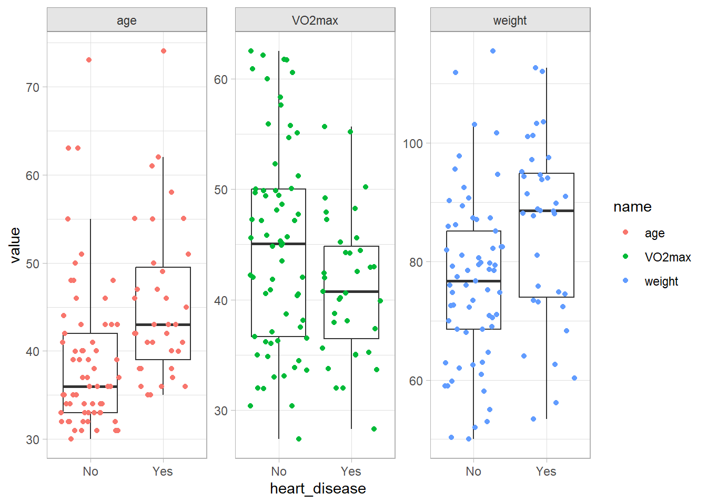
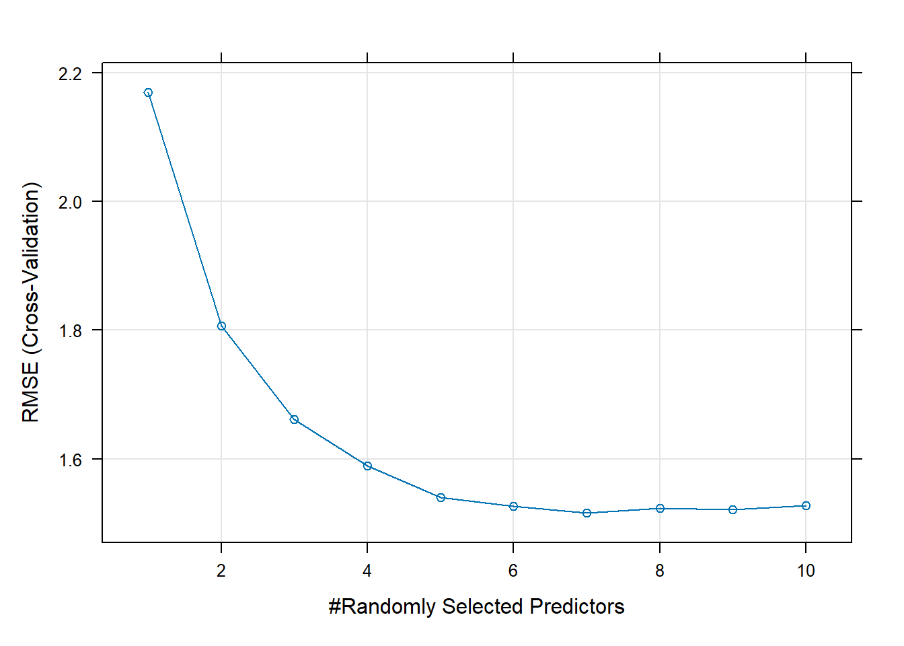
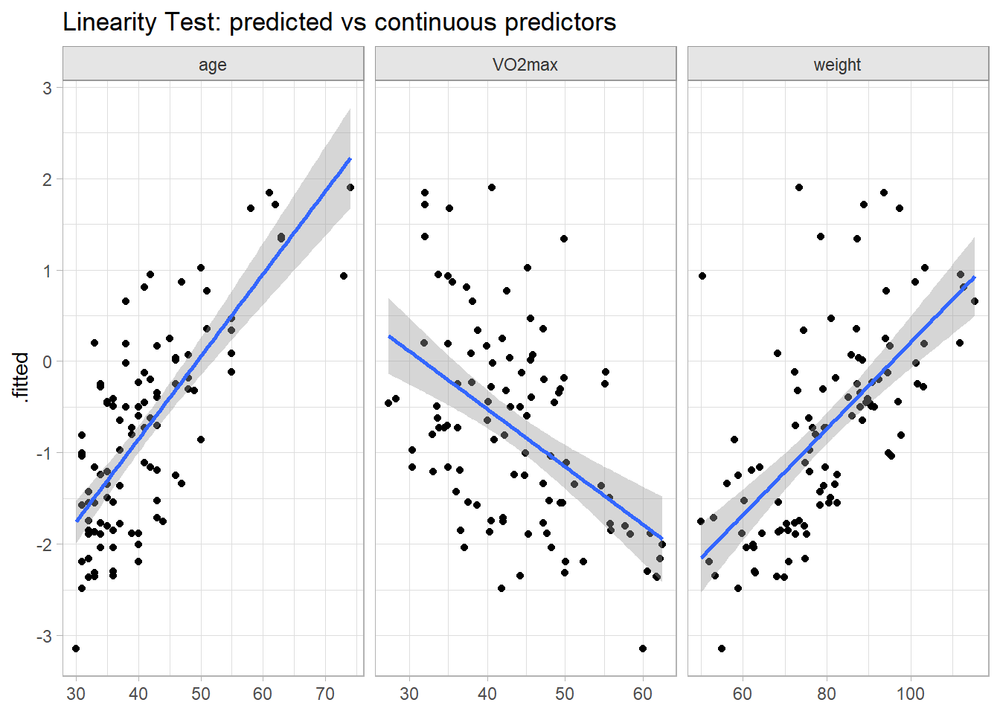
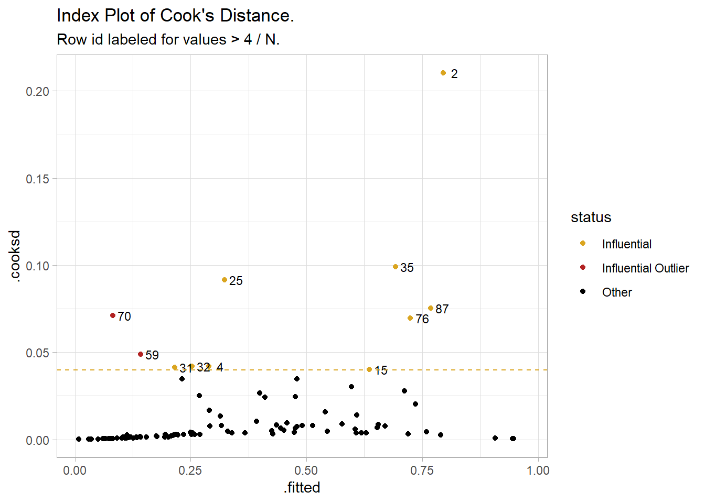
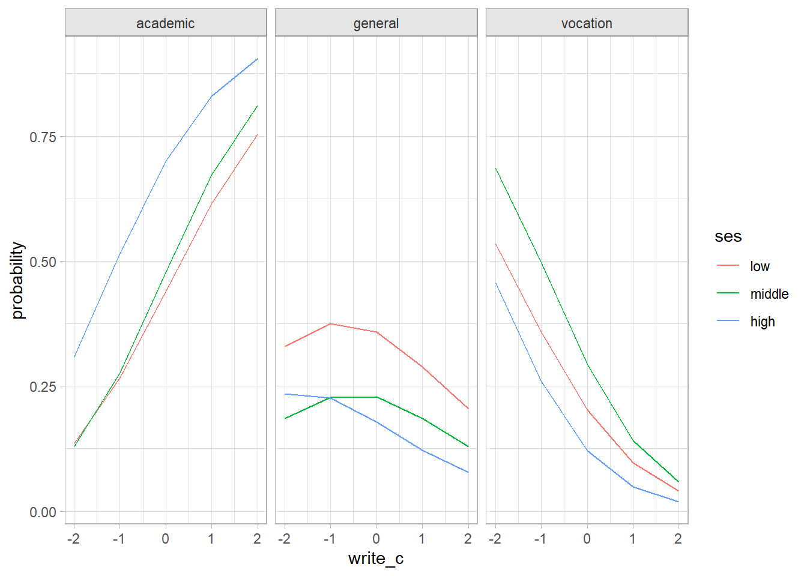
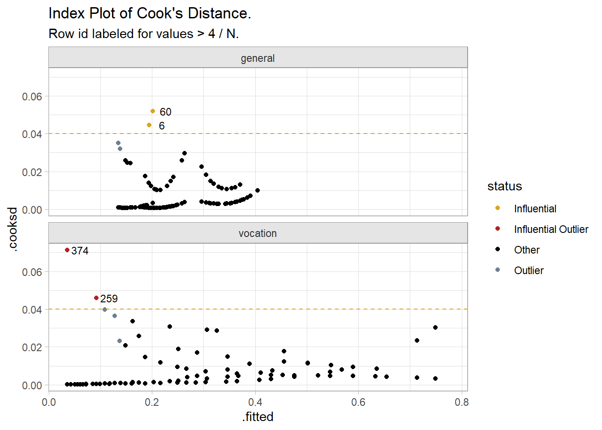
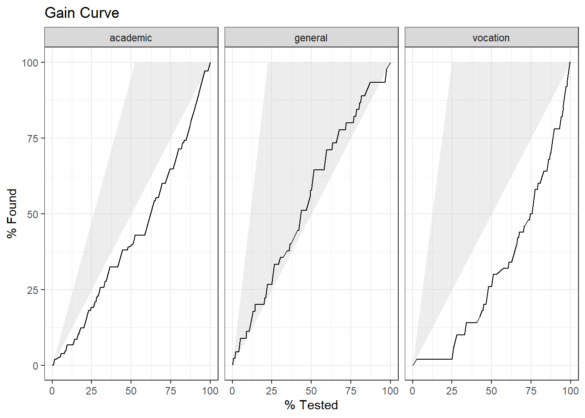
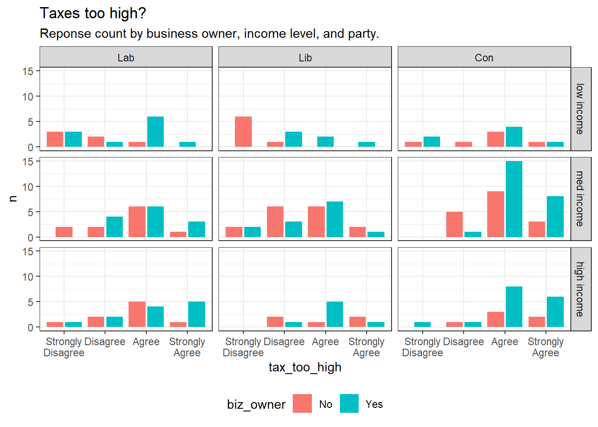
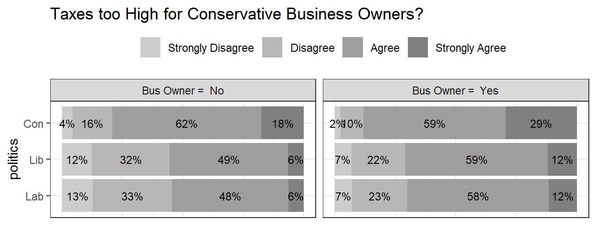

Chapter 2 Generalized Linear Models (GLM)
The linear regression model, \(E(y|X) = X \beta\), structured as \(y_i = X_i \beta + \epsilon_i\) where \(X_i \beta = \mu_i\), assumes the response is a linear function of the predictors and the residuals are independent random variables normally distributed with zero mean and constant variance, \(\epsilon \sim N \left(0, \sigma^2 \right)\). This implies that given a set of predictors, the response is normally distributed about its expected value, \(y_i \sim N \left(\mu_i, \sigma^2 \right)\). However, there are many situations where this normality assumption does not hold. Generalized linear models (GLMs) are a generalization of the linear regression model that work with non-normal response distributions.1
The response will not have a normal distribution if the underlying data-generating process is binomial (Section 2.1) or multinomial (Section 2.2), ordinal (Section 2.3), Poisson (counts, Section 2.4), or exponential (time-to-event). In these situations the linear regression model can predict probabilities and proportions outside [0, 1], or negative counts or times. GLMs solve this problem by modeling a function of the expected value of \(y\), \(f(E(y|X)) = X \beta\). There are three components to a GLM: a random component specified by the response variable’s probability distribution (normal, binomial, etc.); a systematic component in the form \(X\beta\); and a link function, \(\eta\), that specifies the link between the random and systematic components and converts the response to a range of \([-\infty, +\infty]\).
Linear regression is a special case of GLM where the link function is the identity function, \(f(E(y|X)) = E(y|X)\). For binary logistic regression, the link function is the logit,
\[f(E(y|X)) = \log \left( \frac{E(y|X)}{1 - E(y|X)} \right) = \log \left( \frac{\pi}{1 - \pi} \right) = \mathrm{logit}(\pi)\]
where \(\pi\) is the response probability.2 For multinomial logistic regression, the link function is the logit again, but with respect to the baseline level, and there is set of logits (one for each non-baseline level),
\[f(E(y|X)) = \log \left( \frac{E(y_j|X)}{E(y_{j^*}|X)} \right) = \log \left( \frac{\pi_j}{\pi_{j^*}} \right) = \mathrm{logit}(\pi_j)\]
Where \(j\) is a level in the dependent variable and \(j^*\) is the baseline level. For Poisson regression, the link function is
\[f(E(y|X)) = \ln (E(y|X)) = \ln(\lambda)\]
where \(\lambda\) is the expected event rate. For exponential regression, the link function is
\[f(E(y|X) = -E(y|X) = -\lambda\]
where \(\lambda\) is the expected time to event.
GLM uses maximum likelihood estimation (MLE) rather than ordinary least squares (OLS) to estimate the parameters, and thus relies on large-sample approximations.
Fit a GLM just like an linear model, but with the glm() function, specifying the distribution with the family = c("gaussian", "binomial", "poisson") parameter. Fit a mulinomial logistic regression model with nnet::multinom().
2.1 Binomial Logistic Regression
Logistic regression estimates the probability that a categorical dependent variable is a particular level. The dependent variable levels can be binomial, multinomial, or ordinal. The binary logistic regression model is
\[y_i = \mathrm{logit}(\pi_i) = \log \left( \frac{\pi_i}{1 - \pi_i} \right) = X_i \beta\]
where \(\pi_i\) is the response \(i\)’s binary level probability. The model predicts the log odds of the level. Why do this? The range of outcomes need to be between 0 and 1, and a sigmoid function, \(f(y) = 1 / \left(1 + e^y \right)\), does that. If the log odds of the level equals \(X_i\beta\), then the odds of the level equals \(e^{X\beta}\). You can solve for \(\pi_i\) to get \(\pi = \mathrm{odds} / (\mathrm{odds} + 1)\). Substituting,
\[\pi_i = \frac{\exp(y_i)}{1 + \exp(y_i)} = \frac{e^{X_i\beta}}{1 + e^{X_i\beta}}\]
which you can simplify to \(\pi_i = 1 / (1 + e^{-X_i\beta})\), a sigmoid function. The upshot is \(X\beta\) is the functional relationship between the independent variables and a function of the response, not the response itself.
The model parameters are estimated either by iteratively reweighted least squares optimization or by maximum likelihood estimation (MLE). MLE maximizes the probability produced by a set of parameters \(\beta\) given a data set and probability distribution.3 In logistic regression the probability distribution is the binomial and each observation is the outcome of a single Bernoulli trial.
\[L(\beta; y, X) = \prod_{i=1}^n \pi_i^{y_i}(1 - \pi_i)^{(1-y_i)} = \prod_{i=1}^n\frac{\exp(y_i X_i \beta)}{1 + \exp(X_i \beta)}.\]
In practice, multiplying many small probabilities can be unstable, so MLE optimizes the log likelihood instead.
\[\begin{align} l(\beta; y, X) &= \sum_{i = 1}^n \left(y_i \log(\pi_i) + (1 - y_i) \log(1 - \pi_i) \right) \\ &= \sum_{i = 1}^n \left(y_i X_i \beta - \log(1 + e^{X_i\beta}) \right) \end{align}\]
Sometimes you will see the cost function optimized. The cost function is the negative of of the log likelihood function.
Assumptions
The binomial logistic regression model requires a dichotomous dependent variable and independent observations. The sample size should be large, at least 10 observations per dependent variable level and independent variable. There are three conditions related to the data distribution: i) the logit transformation must be linearly related to any continuous independent variables, ii) there must be no multicollinearity, and iii) there must be no influential outliers.
Case Study 1
This case study uses the Laerd Statistics article on binomial logistic regression data set.
An analysis investigates the relationship between the incidence of heart disease (Yes|No) and age, weight, gender, and maximal aerobic capacity (maxVO2) using data from \(n\) = 100 participants.
cs1$dat %>%
tbl_summary(
by = heart_disease,
include = -caseno,
percent = "row",
statistic = list(all_continuous() ~ "{mean}, {sd}")
)| Characteristic | No, N = 651 | Yes, N = 351 |
|---|---|---|
| age | 39, 8 | 45, 9 |
| weight | 77, 14 | 85, 15 |
| gender | ||
| Female | 29 (78%) | 8 (22%) |
| Male | 36 (57%) | 27 (43%) |
| VO2max | 45, 9 | 41, 6 |
| 1 Mean, SD; n (%) | ||
A brief exploratory analysis helps set your expectations. Men are twice as likely to have heart disease. The odds ratio is (.43/.57) / (.22/.78) = 2.7.
| gender | Total | ||
|---|---|---|---|
| Female | Male | ||
| heart_disease | |||
| No | 29 (78%) | 36 (57%) | 65 (65%) |
| Yes | 8 (22%) | 27 (43%) | 35 (35%) |
| Total | 37 (100%) | 63 (100%) | 100 (100%) |
Age, weight, and poor max aerobic capacity are positively associated with hear disease.
cs1$dat %>%
pivot_longer(cols = c(age, weight, VO2max)) %>%
ggplot(aes(x = heart_disease, y = value)) +
geom_boxplot(outlier.shape = NA) +
geom_jitter(aes(color = name)) +
facet_wrap(facets = vars(name), scales = "free_y")
To facilitate model interpretation, I’ll center the continuous variables around their means. Then the intercept term in the fitted model will represent a reasonable condition, not a zero-aged, zero-weighted person with no aerobic capacity. If you want to present your findings in the framework of a baseline probability (or odds) and the incremental effects of the independent variable, this is the way to go. You might even standardize the continuous vars to get a more meaningful increment. On the other hand, if you want to use your model for predicting outcomes, you’ll have to back out of the centering when you predict values.
cs1$dat <- cs1$dat %>%
mutate(
age_c = as.numeric(scale(age, scale = FALSE)),
weight_c = as.numeric(scale(weight, scale = FALSE)),
VO2max_c = as.numeric(scale(VO2max, scale = FALSE)),
gender = factor(gender, levels = c("Male", "Female"))
)
cs1$centers <- list(age = mean(cs1$dat$age),
weight = mean(cs1$dat$weight),
VO2max = mean(cs1$dat$VO2max))The Model
Jump in and fit the model.
cs1$fmla <- formula(heart_disease ~ age_c + weight_c + VO2max_c + gender)
cs1$fit <- glm(cs1$fmla, data = cs1$dat, family = "binomial")
summary(cs1$fit)##
## Call:
## glm(formula = cs1$fmla, family = "binomial", data = cs1$dat)
##
## Coefficients:
## Estimate Std. Error z value Pr(>|z|)
## (Intercept) -0.093483 0.356753 -0.262 0.79329
## age_c 0.085098 0.028160 3.022 0.00251 **
## weight_c 0.005727 0.022442 0.255 0.79858
## VO2max_c -0.099024 0.047944 -2.065 0.03889 *
## genderFemale -1.949639 0.842413 -2.314 0.02065 *
## ---
## Signif. codes: 0 '***' 0.001 '**' 0.01 '*' 0.05 '.' 0.1 ' ' 1
##
## (Dispersion parameter for binomial family taken to be 1)
##
## Null deviance: 129.49 on 99 degrees of freedom
## Residual deviance: 102.09 on 95 degrees of freedom
## AIC: 112.09
##
## Number of Fisher Scoring iterations: 5Let’s take a tour of the summary object. The top section presents the deviance residuals.4 Deviance residuals are one of several residuals you can calculate from a binary logistic regression. One is the raw residual, \(\epsilon_i = y_i - \hat{p}_i\), where \(\hat{p}_i\) is the predicted probability. Another is the Pearson residual, \(r_i = \frac{\epsilon_i}{\sqrt{\hat{p}_i(1 - \hat{p}_i)}}\), the raw residual rescaled by dividing by the estimated standard deviation of a binomial distribution with 1 trial5. A third is the standardized Pearson residual, \(rs_i = r_i / \sqrt{1 - \hat{h}_i}\), the Pearson residual adjusted for the leverage of the predictors using the hat-values. Hat-values measure the predictor distances from the mean. This residual is especially useful to evaluate model fit because if the model fits well, these residuals have a standard normal distribution. Finally, there are the deviance residuals, \(d_i = \mathrm{sign}(\epsilon_i) \left[ -2(y_i \log \hat{p}_i + (1 - y_i) \log (1 - \hat{p}_i)) \right]^{.5}\). Deviance Residuals measure how much the estimated probabilities differ from the observed proportions of success. You want deviance residuals to be evenly distributed (in absolute values, 1Q \(\approx\) 3Q, min \(\approx\) max). You also want the min and max to be <3 because deviance residuals are roughly approximated by a standard normal distribution.
# Raw
residuals(cs1$fit, type = "response") %>% summary()
## Min. 1st Qu. Median Mean 3rd Qu. Max.
## -0.7955 -0.2500 -0.1062 0.0000 0.3533 0.9181
# Pearson
residuals(cs1$fit, type = "pearson") %>% summary()
## Min. 1st Qu. Median Mean 3rd Qu. Max.
## -1.9721 -0.5774 -0.3447 -0.0187 0.7392 3.3486
# Standardized Pearson
rstandard(cs1$fit, type = "pearson") %>% summary()
## Min. 1st Qu. Median Mean 3rd Qu. Max.
## -2.17942 -0.59189 -0.35211 -0.02113 0.75930 3.39975
# Deviance
residuals(cs1$fit, type = "deviance") %>% summary()
## Min. 1st Qu. Median Mean 3rd Qu. Max.
## -1.78156 -0.75854 -0.47381 -0.08019 0.93363 2.23719The next section is the coefficients table.
## Estimate Std. Error z value Pr(>|z|)
## (Intercept) -0.093483020 0.35675295 -0.2620385 0.793291735
## age_c 0.085098077 0.02816013 3.0219351 0.002511644
## weight_c 0.005726835 0.02244169 0.2551874 0.798578389
## VO2max_c -0.099023726 0.04794428 -2.0653917 0.038885956
## genderFemale -1.949638795 0.84241271 -2.3143511 0.020648470The “z value” is the Wald \(z\) statistic, \(z = \hat{\beta} / SE(\hat{\beta})\). Its square is the Wald chi-squared statistic. The p-value is the area to the right of \(z^2\) in the \(\chi_1^2\) density curve:
## (Intercept) age_c weight_c VO2max_c genderFemale
## 0.793291735 0.002511644 0.798578389 0.038885956 0.020648470Below the coefficients table, the “dispersion parameter” line refers to over-dispersion, a common issue with GLM. For a logistic regression, the response variable should be distributed \(y_i \sim \mathrm{Bin}(n_i, \pi_i)\) with \(\mu_i = n_i \pi_i\) and \(\sigma^2 = \pi (1 - \pi)\). Over-dispersion means the data shows evidence of variance greater than \(\sigma^2\).
Skipping to the last line, Fisher scoring is a method for ML estimation. Logistic regression uses interatively reweighted least squares to fit the model, so this line indicates whether the algorithm converged.
Above Fisher, the null deviance is the likelihood ratio of the intercept-only model, \(G^2\) = 129.49. The residual deviance is the likelihood ratio after including the model covariates, \(G^2\) = 102.09. It is the sum of the squared deviance residuals discussed above. The residual deviance is distributed chi-squared and can be used to test whether the model differs from the saturated model (model with as many coefficients as observations, \(G^2\) = 0, df = 0) where \(H_0\) = no difference. The deviance test for lack of fit fails to reject the null hypothesis.
# G^2 calculations
residuals(cs1$fit, type = "deviance") %>% .^2 %>% sum()
## [1] 102.0878
deviance(cs1$fit)
## [1] 102.0878
# df
df.residual(cs1$fit)
## [1] 95
# G^2 is distributed chi-squared with df degrees of freedom
pchisq(deviance(cs1$fit), df = df.residual(cs1$fit), lower.tail = FALSE)
## [1] 0.2911469
vcdExtra::LRstats(cs1$fit)
## Likelihood summary table:
## AIC BIC LR Chisq Df Pr(>Chisq)
## cs1$fit 112.09 125.11 102.09 95 0.2911These two deviances (null, residual) are shown in the ANOVA summary. An ANOVA table shows the change in deviance from successively adding each variable to the model.
## Analysis of Deviance Table
##
## Model: binomial, link: logit
##
## Response: heart_disease
##
## Terms added sequentially (first to last)
##
##
## Df Deviance Resid. Df Resid. Dev
## NULL 99 129.49
## age_c 1 11.9074 98 117.58
## weight_c 1 9.1820 97 108.40
## VO2max_c 1 0.5045 96 107.89
## gender 1 5.8076 95 102.09Interpretation
Start with the dependent variable. Plug in values for the predictor variables to get predictions. \(\hat{y}\) is the log odds of a man of average age, height, and aerobic capacity having heart disease.
newdata <- list(age_c = 0, weight_c = 0, VO2max_c = 0, gender = "Male")
(my_log_odds <- predict(cs1$fit, newdata = newdata) )## 1
## -0.09348302Exponentiate to get the odds, \(\exp (\hat{y}) = \frac{\pi}{1 - \pi}\).
## 1
## 0.9107535Solve for \(\pi = \frac{\exp (\hat{y})}{1 + \exp (\hat{y})}\) to get the probability. Do the math, or use predict(type = "response").
(my_prob <- my_odds / (1 + my_odds))
## 1
## 0.4766462
predict(cs1$fit, newdata = newdata, type = "response")
## 1
## 0.4766462I may already be dead. Move on to the coefficients. Interpret the coefficient estimates as the change in the log odds of \(y\) due to a one unit change in \(x\). If \(\delta = x_a - x_b\), then a \(\delta\) change in \(x\) is associated with a \(\delta \hat{\beta}\) change in the log odds of \(y\). \(\beta\) is the log odds ratio of \(x_a\) vs \(x_b\).
\[\log \left(\pi / (1 - \pi) |_{x = x_a} \right) - \log \left(\pi / (1 - \pi) |_{x = x_b} \right) = \log \left( \frac{\pi / (1 - \pi) |_{x = x_a}}{\pi / (1 - \pi) |_{x = x_b}} \right) = \delta \hat{\beta}\]
The exponential of the coefficient estimates is the change in the odds of \(y\) due to a \(\delta\) change in \(x\). \(\exp \beta\) is the odds ratio of \(x_a\) vs \(x_b\).
\[\mathrm{odds}(y) = e^{\delta \hat{\beta}}\]
coef(cs1$fit)
## (Intercept) age_c weight_c VO2max_c genderFemale
## -0.093483020 0.085098077 0.005726835 -0.099023726 -1.949638795
exp(coef(cs1$fit))
## (Intercept) age_c weight_c VO2max_c genderFemale
## 0.9107535 1.0888239 1.0057433 0.9057212 0.1423255The reference case in the model is gender = “Male”, age centered at 41.1 (age_c = 0), weight centered at 79.7 (weight_c = 0), and VO2max centered at 43.6 (VO2max_c = 0). The intercept term is the log-odds of heart disease at the reference case. Because the data is centered, the reference case is actually meaningful (i.e., not age 0, weight 0, and VO2max 0).
# The intercept equals the predicted value of the reference case.
(my_log_odds <- coef(cs1$fit)["(Intercept)"])
## (Intercept)
## -0.09348302
predict(cs1$fit, newdata = newdata, type = "link")
## 1
## -0.09348302
# From log-odds to odds.
(my_odds <- exp(my_log_odds))
## (Intercept)
## 0.9107535
# Probability.
(my_prob <- my_odds / (1 + my_odds))
## (Intercept)
## 0.4766462
predict(cs1$fit, newdata = newdata, type = "response")
## 1
## 0.4766462The log odds of heart disease for a 41.1 year old male weighing 79.7 kg and with 43.6 VO2max are \(\hat{y} = \mathrm{Intercept}\) = -0.09. The odds are \(\exp(\hat{y})\) = 0.91. The expected probability is \(\frac{\exp(\hat{y})}{1 + \exp(\hat{y})}\) = 47.7%.
What about females? A female’s log odds of heart disease are coef(cs1$fit)["genderFemale"] = -1.95 times that of a male’s (log(OR) = -1.95). A female’s odds are exp(coef(cs1$fit)["genderFemale"]) = 0.14 times that of a male’s (OR = 0.14). A female’s expected probability is predict(cs1$fit, newdata = list(age_c = 0, weight_c = 0, VO2max_c = 0, gender = "Female"), type = "response") = 11.5%.
A one-unit increase in any of the continuous independent variables is interpreted similarly. The reference level is unimportant since the change is constant across the range of values. A one year increase in age increases the log-odds of heart disease by a factor of 0.085, and the odds by a factor of exp(0.085) = 1.089. To calculate the effect of a decade increase in age, multiply \(\beta\) by 10 before exponentiating, or raise the exponentiated coeficient by 10. The effect of a 10-year increase in age is to increase the odds of heart disease by exp(coef(cs1$fit)["age_c"] * 10) = 2.342. The odds more than double every ten years.
oddsratio::or_glm() is a handy way to calculate odds ratios from arbitrary increments to the predictors. Here are the ORs of a 10-year age change, 10 kg weight change, and VO2max change of 5.
## predictor oddsratio ci_low (2.5) ci_high (97.5) increment
## 1 age_c 2.342 1.391 4.270 10
## 2 weight_c 1.059 0.680 1.664 10
## 3 VO2max_c 0.609 0.368 0.952 5
## 4 genderFemale 0.142 0.025 0.700 Indicator variableNotice how the predicted probabilities have the sigmoidal shape of the binary relationship.
augment(cs1$fit, type.predict = "response") %>%
ggplot(aes(x = age_c, color = gender)) +
geom_point(aes(y = as.numeric(heart_disease == "Yes"))) +
geom_point(aes(y = .fitted), shape = 4) +
geom_smooth(aes(y = .fitted)) +
labs(x = "Age",
y = NULL,
title = "Binary Fitted Line Plot") +
scale_y_continuous(breaks = c(0,1), labels = c("Heart Disease", "Healthy")) +
theme_light() +
theme(legend.position = "right")
Assumptions
Four assumptions relate to the study design: (1) the dependent variable is dichotomous; (2) the observations are independent; (3) the categories of all nominal variables are mutually exclusive and exhaustive; and (4) there are at least 10 observations per dependent variable level and independent variable. These assumptions are all valid. Three more assumptions related to the data distribution:
There is a linear relationship between the logit transformation and the continuous independent variables. Test with a plot and with Box-Tidwell.
There is no independent variable multicollinearity. Test with correlation coefficients and variance inflation factors (VIF).
There are no influential outliers. Test with Cook’s distance.
Test the linearity assumption first. There are two ways to do this (do both). First, fit your model, then plot the fitted values against the continuous predictors. This is the GLM analog to OLS bivariate analysis, except now the dependent variable is the logit transformation. These plotted relationships look pretty linear.
glm(heart_disease ~ age + weight + VO2max, data = cs1$dat, family = "binomial") %>%
augment() %>%
pivot_longer(c(age, weight, VO2max)) %>%
ggplot(aes(x = value, y = .fitted)) +
geom_point() +
facet_wrap(facets = vars(name), scales = "free_x") +
geom_smooth(method = "lm", formula = "y~x") +
labs(title = "Linearity Test: predicted vs continuous predictors", x = NULL)
The second test for linearity is the Box-Tidwell approach. Add transformations of the continuous independent variables to the model, \(x_{Tx} = x \log x\), then test their significance level in the fit.
# Using non-centered vars to avoid log(0) errors.
cs1$boxtidwell <- cs1$dat %>%
mutate(
age_tx = log(age) * age,
weight_tx = log(weight) * weight,
VO2max_tx = log(VO2max) * VO2max
) %>%
glm(heart_disease ~ age + weight + VO2max + gender + age_tx + weight_tx + VO2max_tx,
data = ., family = "binomial")
tidy(cs1$boxtidwell)## # A tibble: 8 × 5
## term estimate std.error statistic p.value
## <chr> <dbl> <dbl> <dbl> <dbl>
## 1 (Intercept) -38.7 21.8 -1.78 0.0756
## 2 age 2.73 1.10 2.47 0.0135
## 3 weight 0.144 0.783 0.184 0.854
## 4 VO2max 1.32 1.82 0.724 0.469
## 5 genderFemale -1.85 0.922 -2.01 0.0443
## 6 age_tx -0.543 0.227 -2.40 0.0164
## 7 weight_tx -0.0266 0.146 -0.182 0.855
## 8 VO2max_tx -0.301 0.382 -0.788 0.431Focus on the three transformed variables. age_tx is the only one with a p-value <.05, but it is customary to apply a Bonferroni adjustment when testing for linearity. There are eight predictors in the model (including the intercept term), so the Bonferroni adjusted p-value for age_tx is 0.0164 x 8 = 0.132, so do not reject the null hypothesis of linearity.
If the relationship was nonlinear, you could try transforming the variable by raising it to \(\lambda = 1 + b / \gamma\) where \(b\) is the estimated coefficient of the model without the interaction terms, and \(\gamma\) is the estimated coefficient of the interaction term of the model with interactions. In the case of age, \(b\) is 0.085 and \(\gamma\) is -0.543, so \(\lambda\) = 1 + 0.085 / -0.543 = 0.843. This is approximately 1 (no transformation). It seems customary to apply general transformations like .5 (square root), 1/3 (cube root), ln, and the reciprocal.
Now check for multicollinearity. Variance inflation factors (VIF) estimate how much the variance of a regression coefficient is inflated due to multicollinearity. When independent variables are correlated, it is difficult to say which variable really influences the dependent variable. The VIF for variable \(i\) is
\[ \mathrm{VIF}_i = \frac{1}{1 - R_i^2} \]
where \(R_i^2\) is the coefficient of determination (i.e., the proportion of dependent variance explained by the model) of a regression of \(X_i\) against all of the other predictors, \(X_i = X_{j \ne i} \beta + \epsilon\). If \(X_i\) is totally unrelated to its covariates, then \(R_i^2\) will be zero and \(\mathrm{VIF}_i\) will be 1. If \(R_i^2\) is .8, \(\mathrm{VIF}_i\) will be 5. The rule of thumb is that \(R_i^2 \le 5\) is tolerable, and \(R_i^2 > 5\) is “highly correlated” and you have to do something about it. These are excellent.
## age_c weight_c VO2max_c gender
## 1.035274 1.900575 2.167067 2.502538Try calculating the \(\mathrm{VIF}\) for age_c.
r2 <- lm(age_c ~ weight_c + VO2max_c + gender, data = cs1$dat) %>%
summary() %>% pluck("r.squared")
(vif <- 1 / (1 - r2))
## [1] 1.05715(I don’t know why this doesn’t work. It would work if the underlying model was OLS instead of GLM. The answer seems to be related to GVIF vs VIF, but I didn’t figure it out.)
Now check for influential outliers. Predict the response probabilities and filter for the predictions more than two standard deviations from the actual value and a Cook’s Distance greater than 4/N = 0.04.6 Cook’s distance measures how much predicted values change when observation i is removed from the data. Only two fitted values were both an outlier and influential, row ids 59 and 70. An index plot of Cook’s Distance shows the two points at the far left. You might examine the observations for validity. Otherwise, proceed and explain that there were two standardized residuals with value of 2.01 and 2.27 standard deviations which were kept in the analysis.
augment(cs1$fit, type.predict = "response") %>%
mutate(
id = row_number(),
outlier = if_else(abs(.std.resid) >= 2, "Outlier", "Other"),
influential = if_else(.cooksd > 4 / nrow(cs1$dat), "Influential", "Other"),
status = case_when(
outlier == "Outlier" & influential == "Influential" ~ "Influential Outlier",
outlier == "Outlier" ~ "Outlier",
influential == "Influential" ~ "Influential",
TRUE ~ "Other"
)
) %>%
ggplot(aes(x = .fitted, y = .cooksd)) +
geom_point(aes(color = status)) +
geom_text(aes(label = if_else(influential == "Influential", id, NA_integer_)),
check_overlap = TRUE, size = 3, nudge_x = .025) +
geom_hline(yintercept = 4 / nrow(cs1$dat), linetype = 2, color = "goldenrod") +
scale_color_manual(values = c("Influential Outlier" = "firebrick",
"Influential" = "goldenrod",
"Outlier" = "slategray",
"Other" = "black")) +
theme(legend.position = "right") +
labs(title = "Index Plot of Cook's Distance.",
subtitle = "Row id labeled for values > 4 / N.")
Model Fit
There are several ways to evaluate the model fit.
- The likelihood ratio test
- Pseudo R-squared7.
- Accuracy measures
- Gain and ROC curves
The likelihood ratio test compares the log likelihood of the fitted model to an intercept-only model.
## Likelihood ratio test
##
## Model 1: heart_disease ~ age_c + weight_c + VO2max_c + gender
## Model 2: heart_disease ~ 1
## #Df LogLik Df Chisq Pr(>Chisq)
## 1 5 -51.044
## 2 1 -64.745 -4 27.402 1.649e-05 ***
## ---
## Signif. codes: 0 '***' 0.001 '**' 0.01 '*' 0.05 '.' 0.1 ' ' 1The fitted model is significant, \(\chi^2\)(4) = 27.4, p < .001. Calculate the pseuedo R2 with DescTools::PseudoR2().
## CoxSnell Nagelkerke McFadden
## 0.2396799 0.3301044 0.2116126Laerd interprets this as the model explained 33.0% (Nagelkerke R2) of the variance in heart disease. This is how your would interpret R2 in an OLS model. UCLA points out that the various pseudo R-squareds measure other aspects of the model and are unique to the measured quantity. A pseudo R-squared is not very informative on its own; it is useful for comparing models. Accuracy measures formed by the cross-tabulation of observed and predicted classes is the better way to go.
(cs1$confusion_matrix <- table(
pred = factor(if_else(predict(cs1$fit, type = "response") > .5, "Yes", "No"), levels = c("Yes", "No")),
truth = factor(cs1$dat$heart_disease, levels = c("Yes", "No"))
) %>%
caret::confusionMatrix())## Confusion Matrix and Statistics
##
## truth
## pred Yes No
## Yes 16 10
## No 19 55
##
## Accuracy : 0.71
## 95% CI : (0.6107, 0.7964)
## No Information Rate : 0.65
## P-Value [Acc > NIR] : 0.1236
##
## Kappa : 0.3224
##
## Mcnemar's Test P-Value : 0.1374
##
## Sensitivity : 0.4571
## Specificity : 0.8462
## Pos Pred Value : 0.6154
## Neg Pred Value : 0.7432
## Prevalence : 0.3500
## Detection Rate : 0.1600
## Detection Prevalence : 0.2600
## Balanced Accuracy : 0.6516
##
## 'Positive' Class : Yes
## The model accuracy, 71.0%, is the percent of observations correctly classified. The sensitivity, 45.7%, is the accuracy with regard to predicting positive cases. The specificity, 84.6%, is the accuracy with regard to predicting negative cases. The prevalence, 35.0% is the proportion of cases that were positive.
Finally, plot the gain curve or ROC curve. In the gain curve, the x-axis is the fraction of items seen when sorted by the predicted value, and the y-axis is the cumulatively summed true outcome. The “wizard” curve is the gain curve when the data is sorted by the true outcome. If the model’s gain curve is close to the wizard curve, then the model predicts the response well. The gray area is the “gain” over a random prediction.
augment(cs1$fit, type.predict = "response") %>%
# event_level = "second" sets the second level as success
yardstick::gain_curve(heart_disease, .fitted, event_level = "second") %>%
autoplot() +
labs(title = "Gain Curve")
35 of the 100 participants had heart disease.
- The gain curve encountered 18 heart disease cases (51%) within the first 28 observations (28%). It encountered all 35 heart disease cases on the 89th observation.
- The bottom of the grey area is the outcome of a random model. Only half the heart disease cases would be observed within 50% of the observations.
- The top of the grey area is the outcome of the perfect model, the “wizard curve”. Half the heart disease cases would be observed in 18/100=18% of the observations.
The ROC (Receiver Operating Characteristics) curve plots sensitivity vs specificity at varying cut-off values for the probability ranging from 0 to 1. Ideally, you want very little trade-off between sensitivity and specificity, with a curve hugging the left and top axes.
augment(cs1$fit, type.predict = "response") %>%
# event_level = "second" sets the second level as success
yardstick::roc_curve(heart_disease, .fitted, event_level = "second") %>%
autoplot() +
labs(title = "ROC Curve")
Reporting
A binomial logistic regression was performed to ascertain the effects of age, weight, gender and VO2max on the likelihood that participants have heart disease. Linearity of the continuous variables with respect to the logit of the dependent variable was assessed via the Box-Tidwell (1962) procedure. A Bonferroni correction was applied using all eight terms in the model resulting in statistical significance being accepted when p < 0.00625 (Tabachnick & Fidell, 2014). Based on this assessment, all continuous independent variables were found to be linearly related to the logit of the dependent variable. There were two standardized residuals with value of 2.01 and 2.27 standard deviations, which were kept in the analysis. The logistic regression model was statistically significant, χ2(4) = 27.40, p < .001. The model explained 33.0% (Nagelkerke R2) of the variance in heart disease and correctly classified 71.0% of cases. Sensitivity was 45.7%, specificity was 84.6%, positive predictive value was 61.5% and negative predictive value was 74.3%. Of the five predictor variables only three were statistically significant: age, gender and VO2max (as shown in Table 1). Females had 0.14 times lower odds to exhibit heart disease than males. Increasing age was associated with an increased likelihood of exhibiting heart disease, but increasing VO2max was associated with a reduction in the likelihood of exhibiting heart disease.
| Characteristic | OR1 | 95% CI1 | p-value |
|---|---|---|---|
| age_c | 1.09 | 1.03, 1.16 | 0.003 |
| weight_c | 1.01 | 0.96, 1.05 | 0.8 |
| VO2max_c | 0.91 | 0.82, 0.99 | 0.039 |
| gender | |||
| Male | — | — | |
| Female | 0.14 | 0.02, 0.70 | 0.021 |
| 1 OR = Odds Ratio, CI = Confidence Interval | |||
2.2 Multinomial Logistic Regression
The multinomial logistic regression model is \(J - 1\) baseline logits,
\[y_i = \log \left( \frac{\pi_{ij}}{\pi_{ij^*}} \right) = X_i \beta_j, \hspace{5mm} j \ne j^*\]
where \(j\) is a level of the multinomial response variable. Whereas binomial logistic regression models the log odds of the response level, multinomial logistic regression models the log relative risk, the probability relative to the baseline \(j^*\) level.8
As with binary logistic regression, interpret the \(k^{th}\) element of \(\beta_j\) as the increase in log odds (log relative risk) of \(Y_i = j\) relative to \(Y_i = j^*\) given a one-unit increase in the \(k^{th}\) element of \(X\), holding the other terms constant. The individual probabilities, \(\pi_{ij}\), are
\[\pi_{ij} = \frac{\exp(y_{ij})}{1 + \sum_{j \ne j^*} \exp(y_{ij})} = \frac{e^{X_i\beta_j}}{1 + \sum_{j \ne j^*} e^{X_i\beta_j}}\]
and for the baseline category,
\[\pi_{ij^*} = \frac{1}{1 + \sum_{j \ne j^*} \exp(y_{ij})} = \frac{1}{1 + \sum_{j \ne j^*} e^{X_i\beta_j}}\]
Assumptions
Multinomial logistic regression applies when the dependent variable is categorical. It presumes a linear relationship between the log odds of the dependent variable and \(X\) with residuals \(\epsilon\) that are independent. It also assumes there is no severe multicollinearity in the predictors, and there is independence of irrelevant alternatives (IIA). IIA means the relative likelihood of being in one category compared to the base category would not change if you added other categories.
Case Study 2
This case study uses the data set from this UCLA tutorial.
download.file(
"https://stats.idre.ucla.edu/stat/data/hsbdemo.dta",
"./input/hsbdemo.dta",
mode = "wb"
)A study measures the association between students’ academic program (academic, general, and vocational) and their socioeconomic status (SES) (low, middle, high) and writing score.
cs2$dat %>%
tbl_summary(
by = prog,
include = c(prog, ses, write),
statistic = list(all_continuous() ~ "{mean}, {sd}")
) %>%
gtsummary::add_overall()| Characteristic | Overall, N = 2001 | general, N = 451 | academic, N = 1051 | vocation, N = 501 |
|---|---|---|---|---|
| ses | ||||
| low | 47 (24%) | 16 (36%) | 19 (18%) | 12 (24%) |
| middle | 95 (48%) | 20 (44%) | 44 (42%) | 31 (62%) |
| high | 58 (29%) | 9 (20%) | 42 (40%) | 7 (14%) |
| write | 53, 9 | 51, 9 | 56, 8 | 47, 9 |
| 1 n (%); Mean, SD | ||||
Establish your expectations with a brief exploratory analysis. Academic programs are associated with higher writing scores and SES. General and vocational programs are the opposite, although SES has opposing effects for general (increased probability) and vocational (decreased probability).
cs2$dat %>%
mutate(write_bin = cut(write, breaks = 5, dig.lab = 1, right = FALSE)) %>%
count(prog, ses, write_bin) %>%
group_by(ses, write_bin) %>%
mutate(prob = n / sum(n)) %>%
ungroup() %>%
ggplot(aes(x = write_bin, y = prob, color = ses)) +
geom_point() +
geom_line(aes(group = ses)) +
facet_wrap(facets = vars(prog)) +
theme(legend.position = "top") +
labs(title = "Program Proportions by SES")
Standardize write to facilitate model interpretation. The intercept will represent a reasonable condition (average writing score) and a one-unit incrase in write_c will represent a 1SD increase in writing. Set academic as the reference level for the dependent variable.
cs2$dat <- cs2$dat %>%
mutate(
write_c = as.numeric(scale(write, scale = TRUE)),
prog = fct_relevel(prog, "academic", after = 0)
)The Model
Start by fitting the model with nnet::multinom() or VGAM::vglm(). nnet::multinom() seems to be more popular, but it doesn’t work with some diagnostic functions. VGAM::vglm() also doesn’t work with all diagnostic functions, including tidy() and augment(). I haven’t decided which is preferable. I’ll fit both and move back and forth as convenient.
cs2$fmla <- formula(prog ~ ses + write_c)
cs2$fit_VGAM <- cs2$dat %>%
# `vglm()` uses the _last_ level of the dependent var for the reference.
mutate(prog = fct_relevel(prog, "academic", after = Inf)) %>%
# `model = TRUE` enables pseudo-r2 calculation.
vglm(cs2$fmla, data = ., family = "multinomial", model = TRUE)
cs2$fit_nnet <- multinom(cs2$fmla, data = cs2$dat)The models produce a set of coefficient estimates for each non-reference level of the dependent variable. The summary objects differ in how the present the coefficients. VGAM::vglm() produces the familiar coefficient table, but it labels the levels with integers. Good luck if you forget that VGAM::vglm() use the last level as the reference!. nnet::multinom() identifies the levels by name, but it presents the coefficient estimates as columns, their standard errors as a second section, and does not present the z-statistic or p-values! That may be foregiveable because you can still get these values from tidy() and gtsummary::tbl_regression() (VGAM is incompatible with both!).
##
## Call:
## vglm(formula = cs2$fmla, family = "multinomial", data = ., model = TRUE)
##
## Coefficients:
## Estimate Std. Error z value Pr(>|z|)
## (Intercept):1 -0.2050 0.3491 -0.587 0.55711
## (Intercept):2 -0.7772 0.4111 -1.890 0.05869 .
## sesmiddle:1 -0.5333 0.4437 -1.202 0.22943
## sesmiddle:2 0.2914 0.4764 0.612 0.54074
## seshigh:1 -1.1628 0.5142 -2.261 0.02374 *
## seshigh:2 -0.9827 0.5955 -1.650 0.09893 .
## write_c:1 -0.5491 0.2029 -2.706 0.00682 **
## write_c:2 -1.0768 0.2106 -5.113 3.17e-07 ***
## ---
## Signif. codes: 0 '***' 0.001 '**' 0.01 '*' 0.05 '.' 0.1 ' ' 1
##
## Names of linear predictors: log(mu[,1]/mu[,3]), log(mu[,2]/mu[,3])
##
## Residual deviance: 359.9635 on 392 degrees of freedom
##
## Log-likelihood: -179.9817 on 392 degrees of freedom
##
## Number of Fisher scoring iterations: 4
##
## No Hauck-Donner effect found in any of the estimates
##
##
## Reference group is level 3 of the response## Call:
## multinom(formula = cs2$fmla, data = cs2$dat)
##
## Coefficients:
## (Intercept) sesmiddle seshigh write_c
## general -0.2049851 -0.5332857 -1.1628363 -0.5490814
## vocation -0.7771705 0.2913906 -0.9826773 -1.0767939
##
## Std. Errors:
## (Intercept) sesmiddle seshigh write_c
## general 0.3491296 0.4437324 0.5142201 0.2029457
## vocation 0.4111072 0.4763734 0.5955665 0.2106132
##
## Residual Deviance: 359.9635
## AIC: 375.9635The Wald z-statistic is \(z = \hat{\beta} / SE(\hat{\beta})\). Its square is the Wald chi-squared statistic. The p-value is the area to the right of \(z^2\) in the \(\chi_1^2\) density curve. The residual deviance, \(G^2 = 2 \sum_{i,j}y_{ij} \log \frac{y_{ij}}{\hat{\pi}_{ij}}\), and log-likelihood, \(-G^2 / 2\) are model diagnostics. More on these in the Model Fit section.
deviance(cs2$fit_VGAM)
## [1] 359.9635
df.residual(cs2$fit_VGAM)
## [1] 392
logLik(cs2$fit_VGAM, sum = TRUE)
## [1] -179.9817Fisher scoring is the method used for the ML estimation.
Interpretation
Start with interpreting the dependent variable. The model predicts the log relative risk of belonging to a program \(j \in\) [vocation, general] vs. \(j^*\) = academic. Plug in values for the predictor variables to get predictions. Below newdata is set to the reference level of ses and the centered value of write.
newdata <- list(ses = "low", write_c = 0)
# VGAM predicts risk (`response`) or log RR (`link`).
my_log_rr <- predict(cs2$fit_VGAM, newdata = newdata, type = "link") %>% .[1, ]
names(my_log_rr) <- levels(cs2$dat$prog)[2:3]
my_log_rr
## general vocation
## -0.2049856 -0.7771791
# nnet predicts risk (`probs`) or class (class), but not log RR.
my_probs <- predict(cs2$fit_nnet, newdata = newdata, type = "probs")
log(my_probs[2:3] / my_probs[1])
## general vocation
## -0.2049851 -0.7771705Exponentiate to get the relative risk, \(RR = \exp (\hat{y}_j) = \pi_j / \pi_{j^*}\). A student of low SES and mean writing score is less likely to be in a general or vocation program than an academic program.
## general vocation
## 0.8146591 0.4597009Use predict() to get the individual risks.
predict(cs2$fit_VGAM, newdata = newdata, type = "response") %>%
.[1, levels(cs2$dat$prog)]
## academic general vocation
## 0.4396841 0.3581927 0.2021232
(my_pred <- predict(cs2$fit_nnet, newdata = newdata, type = "probs"))
## academic general vocation
## 0.4396833 0.3581922 0.2021246Move on to the coefficients. Interpret \(\hat{\beta}\) as the change in the log relative risk of \(y_j\) relative to \(y_{j^*}\) due to a \(\delta\) = one unit change in \(x\). A \(\delta = x_a - x_b\) change in \(x\) is associated with a \(\delta \hat{\beta}\) change. \(\delta\beta\) is the log relative risk ratio.
\[\log \left(\pi_j / \pi_{j^*} |_{x = x_a} \right) - \log \left(\pi_j / \pi_{j^*} |_{x = x_b} \right) = \log \left( \frac{\pi_j / \pi_{j^*} |_{x = x_a}}{\pi_j / \pi_{j^*} |_{x = x_b}} \right) = \delta \hat{\beta}\]
The exponential of \(\hat{\beta}\) is the change in the relative risk of \(y_j\) relative to \(y_{j^*}\) due to a \(\delta\) = one unit change in \(x\). \(\exp \delta \beta\) is the relative risk ratio.
\[\pi_j / \pi_{j^*} |_{x = x_a} = \exp{\delta \hat{\beta}}\]
The reference case in the model is ses = “low” and write centered at 52.8 (write_c = 0). The intercept term is the log-relative risk of \(y_j\) relative to \(y_{j^*}\) for the reference case. Notice how the intercept matches the predicted values above.
# Using VGAM.
ref_log_rr <- coef(cs2$fit_VGAM)[c("(Intercept):1", "(Intercept):2")]
names(ref_log_rr) <- levels(cs2$dat$prog)[2:3]
ref_log_rr
## general vocation
## -0.2049856 -0.7771791
# Using nnet.
coef(cs2$fit_nnet)[,"(Intercept)"]
## general vocation
## -0.2049851 -0.7771705
# From log-relative risk to relative risk.
(ref_rr <- exp(ref_log_rr))
## general vocation
## 0.8146591 0.4597009
# Derived from predicted values
my_pred[-1] / my_pred[1]
## general vocation
## 0.8146595 0.4597049The log relative risks of a low SES student with a 52.8 writing score being in program general vs academic are \(\hat{y} = \mathrm{Intercept}_1\) = -0.205 and \(\hat{y} = \mathrm{Intercept}_2\) = -0.777 for vocation vs academic. The corresponding relative risks are \(\exp(\hat{y}_j)\) = 0.815 and 0.460. The expected probabilities are 44.0%, 35.8%, and 20.2% for academic, general, and vocation respectively.
What if SES is high instead of low? The log RR of a high SES student being in program general vs academic are coef(cs2$fit_VGAM)["seshigh:1"] = -1.16 times that of a low SES student. For program vocation vs academic, it is coef(cs2$fit_VGAM)["seshigh:2"] = -0.98. The RRs are 0.31 and 0.37. The expected probabilities are 17.8%, 12.1%, and 70.1% for academic, general, and vocation respectively.
What if the writing score increases by 1 SD (one unit)? The log RR of being in program general vs academic change by a factor of coef(cs2$fit_VGAM)["write_c:1"] = -0.549, RR = 0.577. A 2 SD increase is associated with a log RR = -1.098, RR = 0.333.
One way to visualize the parameter estimates is to plot the predicted values.
newdata <- expand.grid(
ses = cs2$dat$ses,
write_c = seq(from = round(min(cs2$dat$write_c)), to = round(max(cs2$dat$write_c)), by = 1)
)
bind_cols(
newdata,
predict(cs2$fit_VGAM, newdata = newdata, type = "response")
) %>%
pivot_longer(cols = -c(ses, write_c), names_to = "prog", values_to = "probability") %>%
ggplot(aes(x = write_c, y = probability, color = ses)) +
geom_line() +
facet_wrap(facets = vars(prog))
Assumptions
Four assumptions relate to the study design: (1) the dependent variable is multinomial; (2) the observations are independent; (3) the categories of all nominal variables are mutually exclusive and exhaustive; and (4) there are at least 10 observations per dependent variable level and independent variable. These assumptions are all valid. Three more assumptions related to the data distribution:
There is a linear relationship between the logit transformation and the continuous independent variables. Test with a plot and with Box-Tidwell.
There is no independent variable multicollinearity. Test with correlation coefficients and variance inflation factors (VIF).
There are no influential outliers. Test with Cook’s distance.
There are two ways to test for linearity (do both). First, plot the fitted values against the continuous predictors. This is the GLM analog to OLS bivariate analysis, except now the dependent variable is the logit transformation. These plotted relationships look good, except that in the prog = general level, writing score appears to interact with SES.
.fitted = predict(cs2$fit_VGAM, type = "response") %>% as.data.frame()
bind_cols(cs2$dat, .fitted) %>%
pivot_longer(cols = c(general:academic), values_to = ".fitted") %>%
filter(prog == name) %>%
ggplot(aes(x = write_c, y = .fitted, color = ses)) +
geom_point() +
facet_wrap(facets = vars(name), scales = "free_x") +
geom_smooth(method = "lm", formula = "y~x") +
labs(title = "Linearity Test: predicted vs continuous predictors", x = NULL)
The second test for linearity is the Box-Tidwell approach. Add transformations of the continuous independent variables to the model, \(x_{Tx} = x \log x\), then test their significance level in the fit.
# Using non-centered vars to avoid log(0) errors.
cs2$boxtidwell <- cs2$dat %>%
mutate(write_tx = log(write) * write) %>%
multinom(prog ~ ses + write + write_tx, data = .)## # A tibble: 10 × 6
## y.level term estimate std.error statistic p.value
## <chr> <chr> <dbl> <dbl> <dbl> <dbl>
## 1 general (Intercept) 6.38 0.00980 651. 0
## 2 general sesmiddle -0.529 0.444 -1.19 0.233
## 3 general seshigh -1.18 0.513 -2.30 0.0215
## 4 general write -0.409 0.0936 -4.37 0.0000126
## 5 general write_tx 0.0713 0.0231 3.09 0.00198
## 6 vocation (Intercept) 5.91 0.0102 580. 0
## 7 vocation sesmiddle 0.296 0.476 0.621 0.534
## 8 vocation seshigh -0.983 0.594 -1.65 0.0981
## 9 vocation write -0.176 0.0963 -1.83 0.0668
## 10 vocation write_tx 0.0125 0.0239 0.522 0.601Focus on the transformed variable. write_tx has a p-value <.05 for prog = general. It is customary to apply a Bonferroni adjustment when testing for linearity. There are ten predictors in the model (including the intercept terms), so the Bonferroni adjusted p-values for write_tx are multiplied by 10. We should reject the null hypothesis of linearity.
## # A tibble: 2 × 7
## y.level term estimate std.error statistic p.value adj_p
## <chr> <chr> <dbl> <dbl> <dbl> <dbl> <dbl>
## 1 general write_tx 0.0713 0.0231 3.09 0.00198 0.0198
## 2 vocation write_tx 0.0125 0.0239 0.522 0.601 6.01If the relationship is nonlinear, you can try transforming the variable by raising it to \(\lambda = 1 + b / \gamma\) where \(b\) is the estimated coefficient of the model without the interaction terms, and \(\gamma\) is the estimated coefficient of the interaction term of the model with interactions. For write, \(b\) is -0.549 for general and \(\gamma\) is 0.071, so \(\lambda\) = 1 + -0.549 / 0.071 = -6.696. It seems customary to apply general transformations like .5 (square root), 1/3 (cube root), ln, and the reciprocal, so maybe try raising write_c to -7. It seems in this case that the better solution is to add an interaction between write_c and ses to the model. I’m not going to pursue this further here.
Check for multicollinearity using variance inflation factors (VIF). VIFs estimate how much the variance of a regression coefficient is inflated due to multicollinearity. When independent variables are correlated, it is difficult to say which variable really influences the dependent variable. The VIF for variable \(i\) is
\[ \mathrm{VIF}_i = \frac{1}{1 - R_i^2} \]
where \(R_i^2\) is the coefficient of determination (i.e., the proportion of dependent variance explained by the model) of a regression of \(X_i\) against all of the other predictors, \(X_i = X_{j \ne i} \beta + \epsilon\). If \(X_i\) is totally unrelated to its covariates, then \(R_i^2\) will be zero and \(\mathrm{VIF}_i\) will be 1. If \(R_i^2\) is .8, \(\mathrm{VIF}_i\) will be 5. The rule of thumb is that \(R_i^2 \le 5\) is tolerable, and \(R_i^2 > 5\) is “highly correlated” and you have to do something about it. car::vif() doesn’t seem to work for multinomial logistic regression. The model type is not actually important here - we’re concerned about the covariate relationships. Below, I successively collapse the dependent variable into two-levels, then fit a binomial logistic regression and pipe that into car::vif().
tmp_fit_general <- cs2$dat %>%
mutate(prog = fct_collapse(prog, vocation = "academic")) %>%
glm(cs2$fmla, data = ., family = "binomial")
car::vif(tmp_fit_general)## GVIF Df GVIF^(1/(2*Df))
## ses 1.037207 2 1.009175
## write_c 1.037207 1 1.018433tmp_fit_vocation <- cs2$dat %>%
mutate(prog = fct_collapse(prog, general = "academic")) %>%
glm(cs2$fmla, data = ., family = "binomial")
car::vif(tmp_fit_vocation)## GVIF Df GVIF^(1/(2*Df))
## ses 1.020017 2 1.004967
## write_c 1.020017 1 1.009959cs2$outliers_general <- augment(tmp_fit_general, type.predict = "response") %>%
filter(abs(.std.resid) >= 2) %>%
pull(.std.resid)
cs2$outliers_vocation <- augment(tmp_fit_vocation, type.predict = "response") %>%
filter(abs(.std.resid) >= 2) %>%
pull(.std.resid)Check for influential outliers. Predict the response probabilities and filter for the predictions more than two standard deviations from the actual value and a Cook’s Distance greater than 4/N = 0.02.9 Cook’s distance measures how much predicted values change when observation i is removed from the data. There is no simple way to do this for the multinomial regression because neither VGAM nor nnet support the augment() generic. Instead, I will calculate the influential outliers for the two binomial logistic regressions I used for the VIF diagnostic. No fitted values were influential outliers in the first fit, and only two were influential outliers in the second fit, row ids 259 and 374. An index plot of Cook’s Distance shows the two points at the far left. You might examine the observations for validity. Otherwise, proceed and explain that there were two standardized residuals with value of 2.20 and 2.59 standard deviations which were kept in the analysis.
bind_rows(
general = augment(tmp_fit_general, type.predict = "response"),
vocation = augment(tmp_fit_vocation, type.predict = "response"),
.id = "logit"
) %>%
mutate(
id = row_number(),
outlier = if_else(abs(.std.resid) >= 2, "Outlier", "Other"),
influential = if_else(.cooksd > 4 / nrow(cs1$dat), "Influential", "Other"),
status = case_when(
outlier == "Outlier" & influential == "Influential" ~ "Influential Outlier",
outlier == "Outlier" ~ "Outlier",
influential == "Influential" ~ "Influential",
TRUE ~ "Other"
)
) %>%
ggplot(aes(x = .fitted, y = .cooksd)) +
geom_point(aes(color = status)) +
geom_text(aes(label = if_else(influential == "Influential", id, NA_integer_)),
check_overlap = TRUE, size = 3, nudge_x = .025) +
geom_hline(yintercept = 4 / nrow(cs1$dat), linetype = 2, color = "goldenrod") +
scale_color_manual(values = c("Influential Outlier" = "firebrick",
"Influential" = "goldenrod",
"Outlier" = "slategray",
"Other" = "black")) +
theme(legend.position = "right") +
labs(title = "Index Plot of Cook's Distance.",
subtitle = "Row id labeled for values > 4 / N.") +
facet_wrap(facets = vars(logit), ncol = 1)
Model Fit
There are several ways to evaluate the model fit.
- Deviance and chi-squared tests for lack of fit
- The likelihood ratio test
- Pseudo R-squared10.
- Accuracy measures
- Gain and ROC curves
Lack of Fit
The deviance test for lack of fit and the likelihood ratio test are residuals tests. The deviance residual is defined as \(d_i = \mathrm{sign}(\epsilon_i) \left[ -2(y_i \log \hat{\pi}_i + (1 - y_i) \log (1 - \hat{\pi}_i)) \right]^{.5}\). You can calculate them by hand.
# Actual values (1s and 0s for three response levels)
y <- cs2$dat %>%
mutate(val = 1) %>%
pivot_wider(names_from = prog, values_from = val, values_fill = 0) %>%
select(levels(cs2$dat$prog)) %>%
as.matrix()
# Predicted values (probabilities for three response levels)
pi <- predict(cs2$fit_nnet, type = "probs") * 1
# Raw residuals, by hand or by formula
e <- y - pi
e <- residuals(cs2$fit_VGAM, type = "response") # be careful about column order!
e <- residuals(cs2$fit_nnet, type = "response")
# Deviance residuals
d <- sign(e) * sqrt(-2 * y * log(pi) + (1 - y) * log(1 - pi))The model deviance, \(G^2\), is the sum of the squared deviance residuals. It also equals \(G^2 = 2 \sum_{i,j}y_{ij} \log \frac{y_{ij}}{\hat{\pi}_{ij}}\).
(g2 <- sum(d^2, na.rm = TRUE))
## [1] 359.9635
(g2 <- 2 * sum(y * log(y / pi), na.rm = TRUE))
## [1] 359.9635
(g2 <- deviance(cs2$fit_VGAM))
## [1] 359.9635
(g2 <- deviance(cs2$fit_nnet))
## [1] 359.9635The related Pearson statistic, \(X\), is the sum of the squared Pearson residuals, \(pr_i = \epsilon_i / \sqrt{\hat{\pi}_i}\), the raw residual scaled by dividing by the estimated standard deviation of a binomial distribution with 1 trial. I don’t see this calculated in the residual() functions. You can do it yourself.
## [1] 406.0656The deviance and Pearson statistic are distributed chi-squared with \((N - p)(r - 1)\) degrees of freedom where \(p\) = 4 predictor variables, and \(r\) = 3 levels of the dependent variable for 392 degrees of freedom. The deviance and Pearson tests for lack of fit calculate the probability of the test statistic. The null hypothesis is that the model is correct. Neither test rejects the null hypothesis.
# Deviance test for lack of fit
(N <- nrow(cs2$dat))
## [1] 200
(r <- length(levels(cs2$dat$prog)))
## [1] 3
(p <- length(coef(cs2$fit_VGAM)) / (r - 1)) # coefficients for each level, so divide by # levels
## [1] 4
(df <- (N - p) * (r - 1))
## [1] 392
# Or just use the function
(df <- df.residual(cs2$fit_VGAM))
## [1] 392
pchisq(g2, df, lower.tail = FALSE)
## [1] 0.8755302
pchisq(x2, df, lower.tail = FALSE)
## [1] 0.3014625You can do the same calculations for the intercept-only model.
io_nnet <- multinom(prog ~ 1, data = cs2$dat)
## # weights: 6 (2 variable)
## initial value 219.722458
## final value 204.096674
## converged
io_VGAM <- vglm(prog ~ 1, data = cs2$dat, family = "multinomial")
(io_g2 <- deviance(io_nnet))
## [1] 408.1933
(io_g2 <- deviance(io_VGAM))
## [1] 408.1933
(io_df <- ((nrow(cs2$dat) - length(coef(io_nnet)) / (r - 1)) * (r - 1)))
## [1] 398
(io_df <- df.residual(io_VGAM))
## [1] 398Likelihood Ratio Test
The log-likelihood measures the unexplained variability in the model. The likelihood ratio test compares the log likelihood of the fitted model to the intercept-only model. You can use lmtest::lrtest() to test. anova() does the same thing using the residual deviance, \(G2 = -2 \times \mathrm{log likelihood}\).
## Likelihood ratio test
##
## Model 1: prog ~ 1
## Model 2: prog ~ ses + write_c
## #Df LogLik Df Chisq Pr(>Chisq)
## 1 2 -204.10
## 2 8 -179.98 6 48.23 1.063e-08 ***
## ---
## Signif. codes: 0 '***' 0.001 '**' 0.01 '*' 0.05 '.' 0.1 ' ' 1## Analysis of Deviance Table
##
## Model 1: prog ~ 1
## Model 2: prog ~ ses + write_c
## Resid. Df Resid. Dev Df Deviance Pr(>Chi)
## 1 398 408.19
## 2 392 359.96 6 48.23 1.063e-08 ***
## ---
## Signif. codes: 0 '***' 0.001 '**' 0.01 '*' 0.05 '.' 0.1 ' ' 1The difference in deviances is \(LR\) = 48.23 with 6 degrees of freedom. This is distributed chi-squared, with p-value = 1.063e-08. The deviance test for lack of fit concludes that the model fits significantly better than an empty (intercept-only) model.
You can use lmtest::lrtest() to perform likelihood ratio tests on the significance of the predictors too. The likelihood ratio test compares the log likelihood with and without the predictor.
## # weights: 9 (4 variable)
## initial value 219.722458
## final value 185.510837
## converged## Likelihood ratio test
##
## Model 1: prog ~ ses + write_c
## Model 2: prog ~ write_c
## #Df LogLik Df Chisq Pr(>Chisq)
## 1 8 -179.98
## 2 4 -185.51 -4 11.058 0.02592 *
## ---
## Signif. codes: 0 '***' 0.001 '**' 0.01 '*' 0.05 '.' 0.1 ' ' 1## # weights: 12 (6 variable)
## initial value 219.722458
## iter 10 value 195.705189
## iter 10 value 195.705188
## iter 10 value 195.705188
## final value 195.705188
## converged## Likelihood ratio test
##
## Model 1: prog ~ ses + write_c
## Model 2: prog ~ ses
## #Df LogLik Df Chisq Pr(>Chisq)
## 1 8 -179.98
## 2 6 -195.71 -2 31.447 1.484e-07 ***
## ---
## Signif. codes: 0 '***' 0.001 '**' 0.01 '*' 0.05 '.' 0.1 ' ' 1Both SES, \(X^2\) = 11.058, p = 0.026, and writing score \(X^2\) = 31.447, p = 1.484e-07, had significant effects on the program.
Logistic regression does not have a direct R-squared statistic like OLS does (the proportion of variance explained by the model). However, there are some analogs, called pseudo R-squared. You’ll encounter three pseudo R-squared measures: Cox and Snell, Nagelkerke, and McFadden.
## CoxSnell Nagelkerke McFadden
## 0.2142758 0.2462666 0.1181545Accuracy measures formed by the cross-tabulation of observed and predicted classes is the better model fit diagnostic the the pseudo r-squareds.
pred <- predict(cs2$fit_VGAM, type = "response") %>%
as.data.frame() %>%
rowwise() %>%
mutate(
p_max = max(c(general, vocation, academic)),
pred_idx = match(p_max, c(general, vocation, academic)),
pred = c("general", "vocation", "academic")[pred_idx]
) %>%
pull(pred)
(cs2$confusion_matrix <- table(
pred = factor(pred, levels = levels(cs2$dat$prog)),
truth = factor(cs2$dat$prog, levels = levels(cs2$dat$prog))
) %>%
caret::confusionMatrix())## Confusion Matrix and Statistics
##
## truth
## pred academic general vocation
## academic 92 27 23
## general 4 7 4
## vocation 9 11 23
##
## Overall Statistics
##
## Accuracy : 0.61
## 95% CI : (0.5387, 0.678)
## No Information Rate : 0.525
## P-Value [Acc > NIR] : 0.009485
##
## Kappa : 0.2993
##
## Mcnemar's Test P-Value : 7.654e-06
##
## Statistics by Class:
##
## Class: academic Class: general Class: vocation
## Sensitivity 0.8762 0.1556 0.4600
## Specificity 0.4737 0.9484 0.8667
## Pos Pred Value 0.6479 0.4667 0.5349
## Neg Pred Value 0.7759 0.7946 0.8280
## Prevalence 0.5250 0.2250 0.2500
## Detection Rate 0.4600 0.0350 0.1150
## Detection Prevalence 0.7100 0.0750 0.2150
## Balanced Accuracy 0.6749 0.5520 0.6633The model accuracy, 61.0%, is the percent of observations correctly classified. The sensitivities are the accuracy with regard to predicting positive cases in each level of the dependent variable. The specificities are the accuracy with regard to predicting negative cases. The prevalences are the proportion of cases that were positive.
Finally, plot the gain curve or ROC curve. In the gain curve, the x-axis is the fraction of items seen when sorted by the predicted value, and the y-axis is the cumulatively summed true outcome. The “wizard” curve is the gain curve when the data is sorted by the true outcome. If the model’s gain curve is close to the wizard curve, then the model predicts the response well. The gray area is the “gain” over a random prediction.
bind_cols(cs2$dat, .fitted = predict(cs2$fit_VGAM, type = "response")) %>%
# event_level = "second" sets the second level as success
yardstick::gain_curve(prog, .fitted, event_level = "second") %>%
autoplot() +
labs(title = "Gain Curve")
105 of the 200 participants were in the academic program.
- The gain curve encountered 52 academic programs (50%) within the first 72 observations (36%). It encountered all 105 cases on the 189th observation.
- The bottom of the grey area is the outcome of a random model. Only half the academic program cases would be observed within 50% of the observations.
- The top of the grey area is the outcome of the perfect model, the “wizard curve”. Half the academic program cases would be observed in 52.5/200=26.25% of the observations.
The ROC (Receiver Operating Characteristics) curve plots sensitivity vs specificity at varying cut-off values for the probability ranging from 0 to 1. Ideally, you want very little trade-off between sensitivity and specificity, with a curve hugging the left and top axes.
bind_cols(cs2$dat, .fitted = predict(cs2$fit_VGAM, type = "response")) %>%
# event_level = "second" sets the second level as success
yardstick::roc_curve(prog, .fitted, event_level = "second") %>%
autoplot() +
labs(title = "ROC Curve")
Reporting
A multinomial logistic regression was performed to ascertain the effects of socioeconomic status (ses) and writing score on the likelihood that participants are enrolled in an academic, general, or vocation program. Linearity of the continuous variables with respect to the logit of the dependent variable was assessed via the Box-Tidwell (1962) procedure. A Bonferroni correction was applied using all eight terms in the model resulting in statistical significance being accepted when p < 0.00625 (Tabachnick & Fidell, 2014). Based on this assessment, all continuous independent variables were found to be linearly related to the logit of the dependent variable. There were two standardized residuals with value of 2.01 and 2.27 standard deviations, which were kept in the analysis. The logistic regression model was statistically significant, χ2(4) = 27.40, p < .001. The model explained 33.0% (Nagelkerke R2) of the variance in heart disease and correctly classified 71.0% of cases. Sensitivity was 45.7%, specificity was 84.6%, positive predictive value was 61.5% and negative predictive value was 74.3%. Of the five predictor variables only three were statistically significant: age, gender and VO2max (as shown in Table 1). Females had 0.14 times lower odds to exhibit heart disease than males. Increasing age was associated with an increased likelihood of exhibiting heart disease, but increasing VO2max was associated with a reduction in the likelihood of exhibiting heart disease.
| Characteristic | OR1 | 95% CI1 | p-value |
|---|---|---|---|
| general | |||
| ses | |||
| low | — | — | |
| middle | 0.59 | 0.25, 1.40 | 0.2 |
| high | 0.31 | 0.11, 0.86 | 0.024 |
| write_c | 0.58 | 0.39, 0.86 | 0.007 |
| vocation | |||
| ses | |||
| low | — | — | |
| middle | 1.34 | 0.53, 3.40 | 0.5 |
| high | 0.37 | 0.12, 1.20 | 0.10 |
| write_c | 0.34 | 0.23, 0.51 | <0.001 |
| 1 OR = Odds Ratio, CI = Confidence Interval | |||
2.3 Ordinal Logistic Regression
Ordinal logistic regression, also call cumulative link model (CLM), is a generalized linear model (GZLM), an extension of the general linear model (GLM) to non-continuous outcome variables. There are many approaches to ordinal logistic regression, including cumulative, adjacent, and continuation categories, but the most popular is the cumulative odds ordinal logistic regression with proportional odds. These notes rely on UVA, PSU, Laerd, and the CLM package article vignette.
The model for ordinal response random variable \(Y_i\) with \(J\) levels is
\[\gamma_{ij} = F(\eta_{ij}), \hspace{5 mm} \eta_{ij} = \theta_j - x_i^\mathrm{T}\beta, \hspace{5 mm} i = 1, \ldots, n, \hspace{5 mm} j = 1, \ldots, J-1\]
where \(\gamma_{ij} = P(Y_i \le j) = \pi_{i1} + \cdots + \pi_{ij}\). \(\eta_{ij}\) is a linear predictor with \(J-1\) intercepts. \(F\) is the inverse link function. The regression models the logit link function of \(\gamma_{ij}\).
\[\mathrm{logit}(\gamma_{ij}) = \log \left[\frac{P(Y_i \le j)}{P(Y_i \gt j)} \right] = \theta_j - x_i^\mathrm{T}\beta\] The cumulative logit is the log-odds of the cumulative probabilities that the response is in category \(\le j\) versus \(\gt j\). \(\theta_j\) is the log-odds when \(x_i^\mathrm{T}=0\) and \(\beta\) is the increase in the log odds attributed to a one unit increase in \(x_i^\mathrm{T}\). Notice \(\beta\) is the same for all \(j\).
Once you fit the model, you will either generate predicted values or evaluate the coefficient estimators. The predicted value is a log-odds by default (useless), so you will at least take exponential to get the odds. From there you can solve for the probability,
\[P(Y_i \gt j) = \frac{\mathrm{exp}(\hat{y}_i)}{1 + \mathrm{exp}(\hat{y}_i)}.\]
The exponential of \(\beta\) is the odds ratio of \(x_1^\mathrm{T} - x_0^\mathrm{T}\). You can solve for the odds ratio
\[\mathrm{OR} = \frac{\mathrm{exp}(\theta_j - x_1^\mathrm{T}\beta)}{\mathrm{exp}(\theta_j - x_2^\mathrm{T}\beta)} = \mathrm{exp}(\beta(x_1^\mathrm{T} - x_0^\mathrm{T}))\]
If \(x\) is a binary factor factor, then \(exp(\beta)\) is the odds ratio of \(x=1\) vs \(x=0\). Thus the odds-ratio is proportional to the difference between values of \(x\) and \(\beta\) is the constant of proportionality.
The model is estimated with a regularized Newton-Raphson algorithm with step-halving (line search) using analytic expressions for the gradient and Hessian of the negative log-likelihood function. What this means is beyond me right now, but the upshot is that the estimation is an iterative maximization exercise, not a formulaic matrix algebra process. It is possible for the model estimation to fail to converge on a maximum.
You will sometimes encounter discussion about the latent variable. That is just the underlying quality you are trying to measure. If you rate something a 4 on a 5-level likert scale, 4 is the expression of your valuation, the latent variable. Your precise valuation is somewhere between 3 and 5 on a continuous scale. The link function defines the distribution of the latent variable.
There are variations on the ordinal model. Structured thresholds impose restrictions on \(\theta_j\), for example requiring equal distances between levels. Partial proportional odds allow \(\theta_j\) to vary with nominal predictors. You can also use link functions other than logit.
There are two conditions to ordinal logistic regression: (a) no multicollinearity, and (b) proportional odds.
Case Study 3
192 participants in a study respond to the statement “Taxes are too high” on a 4-level likert scale (tax_too_high, Strongly Disagree, Disagree, Agree, Strongly Agree). Participant attributes include business owner (biz_owner, Y|N), age (age), and political affiliation (politics, Liberal, Conservative, Labor).
tax$gt <- tbl_summary(
tax$dat %>% select(-age),
by = politics,
statistic = list(all_continuous() ~ "{mean} ({sd})")
)
tax$gt| Characteristic | Lab, N = 621 | Lib, N = 541 | Con, N = 761 |
|---|---|---|---|
| biz_owner | 36 (58%) | 26 (48%) | 47 (62%) |
| income | 36 (8) | 35 (6) | 37 (7) |
| tax_too_high | |||
| Strongly Disagree | 10 (16%) | 10 (19%) | 4 (5.3%) |
| Disagree | 13 (21%) | 16 (30%) | 9 (12%) |
| Agree | 28 (45%) | 21 (39%) | 42 (55%) |
| Strongly Agree | 11 (18%) | 7 (13%) | 21 (28%) |
| 1 n (%); Mean (SD) | |||
tax$dat %>%
mutate(income = case_when(income < quantile(income, .25) ~ "low income",
income < quantile(income, .75) ~ "med income",
TRUE ~ "high income"),
income = factor(income, levels = c("low income", "med income", "high income"))) %>%
count(tax_too_high, biz_owner, politics, income) %>%
ggplot(aes(x = tax_too_high, y = n, fill = biz_owner)) +
geom_col(position = position_dodge2(preserve = "single")) +
facet_grid(rows = vars(income), cols = vars(politics), space = "free") +
scale_x_discrete(labels = function (x) str_wrap(x, width = 10)) +
theme_bw() +
theme(legend.position = "bottom") +
labs(title = "Taxes too high?",
subtitle = "Reponse count by business owner, income level, and party.")
Fit a cumulative link model for the cumulative probability of the \(i\)th response falling in \(j\)th category or below where \(i\) indexes the (\(n = 192\)) responses, \(j = 1, \ldots, J\) indexes the (\(J = 4\)) response categories, and \(\theta_j\) is the threshold for the \(j\)th cumulative logit.
\[\mathrm{logit}(P(Y_i \le j)) = \theta_j - \beta_1(\mathrm{politics}_i) - \beta_2(\mathrm{biz\_owner}_i) - \beta_3(\mathrm{age}_i)\]
Fit the Model
tax$fmla <- formula(tax_too_high ~ biz_owner + age + politics)
tax$clm <- clm(tax$fmla, data = tax$dat)
summary(tax$clm)## formula: tax_too_high ~ biz_owner + age + politics
## data: tax$dat
##
## link threshold nobs logLik AIC niter max.grad cond.H
## logit flexible 192 -197.62 409.23 6(0) 3.14e-12 3.2e+05
##
## Coefficients:
## Estimate Std. Error z value Pr(>|z|)
## biz_ownerYes 0.66462 0.28894 2.300 0.021435 *
## age 0.24189 0.03260 7.421 1.17e-13 ***
## politicsLib 0.03695 0.36366 0.102 0.919072
## politicsCon 1.16142 0.34554 3.361 0.000776 ***
## ---
## Signif. codes: 0 '***' 0.001 '**' 0.01 '*' 0.05 '.' 0.1 ' ' 1
##
## Threshold coefficients:
## Estimate Std. Error z value
## Strongly Disagree|Disagree 7.026 1.166 6.024
## Disagree|Agree 8.766 1.231 7.119
## Agree|Strongly Agree 11.653 1.357 8.590The summary table shows two fit statistics at the top: the log-likelihood and the AIC. The log-likelihood is the sum of the likelihoods for each observation that the predicted value correctly predicts the observed value. Its value ranges from \(-\infty\) to \(+\infty\). It’s value increases with observations, additional variables, and fit quality. I think you just use it to compare alternative model formulations. Akaike Information Criterion (AIC) is a measure of the relative quality of a statistical model. Again, I think the value is only useful as a comparison benchmark between alternative model fits. You’d want the model with the lowest AIC.
The Coefficients table is the familiar parameter estimates. E.g., for biz_ownerYes, the coefficient estimate is 0.665 with standard error 0.289. The z-value is the ratio \(z = \hat{\beta} / se =\) 2.300 with p-value equal to \(2 \cdot P(Z>z) =\) 0.021. Some programs (e.g., SPSS) also show the Wald chi-squared statistic, the square of the z statistic, \(z^2 =\), 5.291. The square of a normal variable has a chi-square distribution, so the p value for the Wald chi-squared statistic is the pchisq(z^2, df = 1) \(=\) 0.021.
The Threshold coefficients table are the intercepts, or cut-points. The first cut-point is log-odds of a response level Strongly Disagree (or less) vs greater than Strongly Disagree when all factor variables are at their reference level and the continuous vars are at 0.
There may be interaction effects between biz_owner and politics. Fit a saturate model, then compare their log likelihoods with a likelihood ratio test.
tax$fmla_sat <- formula(tax_too_high ~ biz_owner*politics + age)
tax$clm_sat <- clm(tax$fmla_sat, data = tax$dat)
tax$sat_anova <- anova(tax$clm, tax$clm_sat)
tax$sat_anova## Likelihood ratio tests of cumulative link models:
##
## formula: link: threshold:
## tax$clm tax$fmla logit flexible
## tax$clm_sat tax$fmla_sat logit flexible
##
## no.par AIC logLik LR.stat df Pr(>Chisq)
## tax$clm 7 409.23 -197.62
## tax$clm_sat 9 411.75 -196.87 1.4805 2 0.477The likelihood ratio test indicates the main-effects model fits about the same in comparison to the saturated model (\(\chi^2(\) 2 $) = $ LR = 1.48, p = 0.477)
Verify Assumptions
Cumulative odds ordinal logistic regression with proportional odds models require a) no multicollinearity, and b) proportional odds.
Multicollinearity
Multicollinearity occurs when two or more independent variables are highly correlated so that they do not provide unique or independent information in the regression model. Multicollinearity inflates the variances of the estimated coefficients, resulting in larger confidence intervals. The usual interpretation of a slope coefficient as the change in the mean response per unit increase in the predictor when all the other predictors are held constant breaks down because changing one predictor necessarily changes other predictors.
Test for multicollinearity with variance inflation factors (VIF). The VIF is the inflation percentage of the parameter variance due to multicollinearity. E.g., a VIF of 1.9 means the parameter variance is 90% larger than what it would be if it was not correlated with other predictors.
Predictor \(K\)’s variance, \(Var(\hat{\beta_k})\), is inflated by a factor of
\[VIF_k = \frac{1}{1 - R_k^2}\]
due to collinearity with other predictors, where \(R_k^2\) is the \(R^2\) of a regression of the \(k^{th}\) predictor on the remaining predictors. If there is zero relationship between predictor \(k\) and the other variables, \(R_k^2 = 0\) and \(VIF = 1\) (no variance inflation). If 100% of the variance in predictor \(k\) is explained by the other predictors, then \(R_k^2 = 1\) and \(VIF = \infty\). A good rule of thumb is that \(VIF \le 5\) is acceptable.
# Cannot use CLM model with vif(). Re-express as a linear model.
tax$vif <- lm(as.numeric(tax_too_high) ~ politics + biz_owner + age, dat = tax$dat) %>%
car::vif()
tax$vif## GVIF Df GVIF^(1/(2*Df))
## politics 1.035831 2 1.008840
## biz_owner 1.023642 1 1.011752
## age 1.036491 1 1.018082The VIFs in column GVIF are all below 5, so this model is not compromised by multicollinearity.
Proportional Odds
The assumption of proportional odds means the independent variable effects are constant across each cumulative split of the ordinal dependent variable. Test for proportional odds using a full likelihood ratio test comparing the proportional odds model with a multinomial logit model, also called an unconstrained baseline logit model. This is also called the test of parallel lines. The multinomial logit model fits a slope to each of the \(J – 1\) levels. The proportional odds model is nested within the multinomial model, so you can use a likelihood ratio test to see if the models are statistically different. Fit the proportional odds model and a multinomial model using VGAM::vglm() and capture the log likelihoods and degrees of freedom. Perform a likelihood ratio test on the differences in log likelihoods, \(D = -2 \mathrm{loglik}(\beta)\).
tax$vglm_ordinal <- vglm(tax$fmla, propodds, data = tax$dat)
tax$vglm_multinomial <- vglm(tax$fmla, cumulative, data = tax$dat)
tax$po_lrt <- VGAM::lrtest(tax$vglm_multinomial, tax$vglm_ordinal)
tax$po_lrt## Likelihood ratio test
##
## Model 1: tax_too_high ~ biz_owner + age + politics
## Model 2: tax_too_high ~ biz_owner + age + politics
## #Df LogLik Df Chisq Pr(>Chisq)
## 1 561 -193.31
## 2 569 -197.62 8 8.6197 0.3754The assumption of proportional odds was met, as assessed by a full likelihood ratio test comparing the fit of the proportional odds model to a model with varying location parameters, \(\chi^2\)(8) = 8.620, p = 0.375.
Another option is the partial proportional odds test. This test locates specific variables causing the rejection of proportional odds.
## Tests of nominal effects
##
## formula: tax_too_high ~ biz_owner + age + politics
## Df logLik AIC LRT Pr(>Chi)
## <none> -197.62 409.23
## biz_owner 2 -197.34 412.67 0.55974 0.7559
## age
## politics 4 -196.20 414.40 2.83415 0.5860The assumption of proportional odds was met, as assessed by a full likelihood ratio test comparing the fit of the proportional odds model to a model with varying location parameters for business owner, \(\chi^2\)(2) = 0.560, p = 0.756 and politics, \(\chi^2\)(4) = 2.834, p = 0.586.
Assess the Model Fit
There are three ways to assess overall model fit: The Deviance and Pearson goodness-of-fit tests of the overall model fit; the Cox and Snell, Nagelkerke, and McFadden pseudo R measures of explained variance; and the likelihood ratio test comparing the model fit to the intercept-only model.
Deviance and Pearson
However, these tests rely on large frequencies in each cell, that is, each possible combination of predictor values. Overall goodness-of-fit statistics should be treated with suspicion when a continuous independent variable is present and/or there are a large number of cells with zero frequency.The Pearson goodness-of-fit statistic is \(X^2 = \sum \frac{(O_{ij} - E_{ij})^2}{E_{ij}}\) where \(i\) is the observation number and \(j\) is the response variable level. It is a summary of the Pearson residuals, the difference between the observed and expected cell counts, \(O_{ij} - E_{ij}\). The deviance goodness-of-fit statistic is the difference in fit between the model and a full model; a full model being a model that fits the data perfectly, \(G^2 = 2 \sum_{ij} O_{ij} \log \left( \frac{O_{ij}}{E_{ij}} \right)\). Neither of these tests are reliable if there are many cells with zero frequencies and/or small expected frequencies and are generally not recommended. Generally, the chi-squared test requires a frequency count of at least 5 per cell.
# Observed combinations of model vars
tax$cell_patterns <- tax$dat %>% count(biz_owner, age, politics, tax_too_high) %>% nrow()
# Observed combinations of predictor vars * levels of response var
tax$covariate_patterns <- tax$dat %>% count(biz_owner, age, politics) %>% nrow()
tax$possible_cells <- tax$covariate_patterns * length(levels(tax$dat$tax_too_high))
# 1 - ratio of observed to possible
tax$pct_freq_zero <- 1 - tax$cell_patterns / tax$possible_cellsThere are 137 observed combinations of model variables (predictors), and 372 possible combinations (predictors * outcome levels), so 63.2% of cells have zero frequencies. Ideally, zero frequencies should be less than 20%, so if you were to use the deviance or Pearson tests, you would need to report this. The results below are contradictory and bogus. I think you’d only use this test if you didn’t have continuous predictor variables.
observed <- tax$dat %>%
count(biz_owner, age, politics, tax_too_high) %>%
pivot_wider(names_from = tax_too_high, values_from = n) %>%
replace_na(list(`Strongly Disagree` = 0, Disagree = 0, Agree = 0, `Strongly Agree` = 0)) %>%
pivot_longer(cols = `Strongly Disagree`:`Strongly Agree`, names_to = "outcome", values_to = "observed")
expected <- bind_cols(
tax$dat,
predict(tax$clm, subset(tax$dat, select = -tax_too_high))$fit %>% data.frame()
) %>%
rename(c("Strongly Disagree" = "Strongly.Disagree", "Strongly Agree" = "Strongly.Agree")) %>%
group_by(biz_owner, age, politics) %>%
summarize(.groups = "drop", across(`Strongly Disagree`:`Strongly Agree`, sum)) %>%
pivot_longer(cols = `Strongly Disagree`:`Strongly Agree`, names_to = "outcome", values_to = "expected")
obs_exp <- observed %>%
inner_join(expected, by = c("politics", "biz_owner", "age", "outcome")) %>%
mutate(epsilon_sq = (observed - expected)^2,
chi_sq = epsilon_sq / expected,
g_sq = 2 * observed * log((observed+.0001) / expected)
)
tax$chisq <- list()
tax$chisq$X2 = sum(obs_exp$chi_sq)
tax$chisq$G2 = sum(obs_exp$g_sq)
tax$chisq$df = tax$covariate_patterns * (length(levels(tax$dat$tax_too_high)) - 1) - 7
tax$chisq$X2_p.value = pchisq(tax$chisq$X2, df = tax$chisq$df, lower.tail = FALSE)
tax$chisq$G2_p.value = pchisq(tax$chisq$G2, df = tax$chisq$df, lower.tail = FALSE)The Pearson goodness-of-fit test indicated that the model was not a good fit to the observed data, \(\chi^2\)(272) = 745.4, p < .001$. The deviance goodness-of-fit test indicated that the model was a good fit to the observed data, \(G^2\)(272) = 232.6, p = 0.960.
Pseudo-R2 Measures
There are a number of measures in ordinal regression that attempt to provide a similar “variance explained” measure as that provided in ordinary least-squares linear regression. However, these measures do not have the direct interpretation that they do in ordinary linear regression and are often, therefore, referred to as “pseudo” R2 measures. The three most common measures (Cox and Snell, Nagelkerke, and McFadden) are not particularly good and not universally used. It is presented in the SPSS output, so you might encounter it in published work.
## Pseudo.R.squared
## McFadden 0.181957
## Cox and Snell (ML) 0.367369
## Nagelkerke (Cragg and Uhler) 0.399641Likelihood Ratio Test
The best way to assess model fit is the likelihood ratio test comparing the model to an intercept-only model. The difference in the -2 log likelihood between the models has a \(\chi^2\) distribution with degrees of freedom equal to the difference in the number of parameters.
intercept_only <- clm(tax_too_high ~ 1, data = tax$dat)
tax$lrt <- anova(tax$clm, intercept_only)
tax$lrt## Likelihood ratio tests of cumulative link models:
##
## formula: link: threshold:
## intercept_only tax_too_high ~ 1 logit flexible
## tax$clm tax$fmla logit flexible
##
## no.par AIC logLik LR.stat df Pr(>Chisq)
## intercept_only 3 489.14 -241.57
## tax$clm 7 409.23 -197.62 87.911 4 < 2.2e-16 ***
## ---
## Signif. codes: 0 '***' 0.001 '**' 0.01 '*' 0.05 '.' 0.1 ' ' 1The table shows the log likelihoods of the two models. LR.stat is the difference between 2 * the logLik values.
The final model statistically significantly predicted the dependent variable over and above the intercept-only model, \(\chi^2(4)\) = 87.9, p = 0.000.
Interpret Results
Return to the model summary.
## # A tibble: 7 × 6
## term estimate std.error statistic p.value coef.type
## <chr> <dbl> <dbl> <dbl> <dbl> <chr>
## 1 Strongly Disagree|Disagree 7.03 1.17 6.02 1.70e- 9 intercept
## 2 Disagree|Agree 8.77 1.23 7.12 1.08e-12 intercept
## 3 Agree|Strongly Agree 11.7 1.36 8.59 8.72e-18 intercept
## 4 biz_ownerYes 0.665 0.289 2.30 2.14e- 2 location
## 5 age 0.242 0.0326 7.42 1.17e-13 location
## 6 politicsLib 0.0369 0.364 0.102 9.19e- 1 location
## 7 politicsCon 1.16 0.346 3.36 7.76e- 4 locationThe coefficients for biz_owner, age, and politics are positive. Positive parameters increase the likelihood of stronger agreement with the statement. In this case, discontent with taxes are higher for business owners, increase with age, and are higher for Liberal Democrats and Conservatives relative to the Labor Party. The expected cumulative log-odds of declaring \(\le j\) level of agreement with the statement for the baseline group (biz_ownerNo, age = 0, politicsLib) is 7.026 for \(j = 1\) (Strongly Disagree), 8.766 for \(j = 2\) (Disagree), and 11.653 for \(j = 3\) (Agree).
You could solve the logit equation for
\[\pi_j = \frac{\mathrm{exp}(Y_i)} {1 + \mathrm{exp}(Y_i)}\]
to get the cumulative probabilities for each level. That’s what predict(type = "cum.prob") does. But it might be more intuitive to work with individual probabilities, the lagged differences to get the individual probabilities for each \(j\). That’s what predict(type = "prob") does. I like to play with predicted values to get a sense of the outcome distributions. In this case, I’ll take the median age, and each combination of biz_owner and politics.
new_data <- tax$dat %>%
mutate(age = median(tax$dat$age)) %>%
expand(age, politics, biz_owner)
preds <- predict(tax$clm, newdata = new_data, type = "prob")[["fit"]] %>% as.data.frame()
bind_cols(new_data, preds) %>%
pivot_longer(cols = `Strongly Disagree`:`Strongly Agree`) %>%
mutate(name = factor(name, levels = levels(tax$dat$tax_too_high))) %>%
ggplot(aes(y = politics, x = value, fill = fct_rev(name))) +
geom_col() +
geom_text(aes(label = scales::percent(value, accuracy = 1)),
size = 3, position = position_stack(vjust=0.5)) +
facet_grid(~paste("Bus Owner = ", biz_owner)) +
scale_fill_grey(start = 0.5, end = 0.8) +
theme_bw() +
theme(legend.position = "top",
axis.text.x = element_blank(),
axis.ticks.x = element_blank()) +
guides(fill = guide_legend(reverse = TRUE)) +
labs(title = "Taxes too High for Conservative Business Owners?",
x = NULL, fill = NULL)
You will want to establish whether politics is statistically significant overall before exploring any specific contrasts. The ANOVA procedure with type I test reports an overall test of significance for each variable entered into the model.
## Type I Analysis of Deviance Table with Wald chi-square tests
##
## Df Chisq Pr(>Chisq)
## biz_owner 1 13.201 0.0002798 ***
## age 1 57.413 3.533e-14 ***
## politics 2 14.636 0.0006635 ***
## ---
## Signif. codes: 0 '***' 0.001 '**' 0.01 '*' 0.05 '.' 0.1 ' ' 1The political party last voted for has a statistically significant effect on the prediction of whether tax is thought to be too high, Wald \(\chi^2\)(2) = 14.6, p = 0.001.
The best way to work with the data is with the tidy(exponentiate = TRUE) version.
## # A tibble: 7 × 8
## term estimate std.error statistic p.value conf.low conf.high coef.type
## <chr> <dbl> <dbl> <dbl> <dbl> <dbl> <dbl> <chr>
## 1 Strongly D… 1.13e3 1.17 6.02 1.70e- 9 NA NA intercept
## 2 Disagree|A… 6.41e3 1.23 7.12 1.08e-12 NA NA intercept
## 3 Agree|Stro… 1.15e5 1.36 8.59 8.72e-18 NA NA intercept
## 4 biz_ownerY… 1.94e0 0.289 2.30 2.14e- 2 1.11 3.44 location
## 5 age 1.27e0 0.0326 7.42 1.17e-13 1.20 1.36 location
## 6 politicsLib 1.04e0 0.364 0.102 9.19e- 1 0.508 2.12 location
## 7 politicsCon 3.19e0 0.346 3.36 7.76e- 4 1.63 6.35 locationThen you can summarize the table in words.
The odds of business owners considering tax to be too high was 1.944 (95% CI, 1.107 to 3.443) times that of non-business owners, a statistically significant effect, z = 2.300, p = 0.021.
The odds of Conservative voters considering tax to be too high was 3.194 (95% CI, 1.635 to 6.351) times that of Labour voters, a statistically significant effect, z = 3.361, p = 0.001. The odds of Liberal Democrat voters considering tax to be too high was similar to that of Labour voters (odds ratio of 1.038 (95% CI, 0.508 to 2.121), p = 0.919.
An increase in age (expressed in years) was associated with an increase in the odds of considering tax too high, with an odds ratio of 1.274 (95% CI, 1.197 to 1.360), z = 7.421, p = 0.000.
Reporting
Here is the complete write-up.
A cumulative odds ordinal logistic regression with proportional odds was run to determine the effect of business ownership, political party voted for, and age, on the belief that taxes are too high. There were proportional odds, as assessed by a full likelihood ratio test comparing the fitted model to a model with varying location parameters, \(\chi^2\)(8) = 8.620, p = 0.375. The final model statistically significantly predicted the dependent variable over and above the intercept-only model, \(\chi^2(4)\) = 87.9, p = 0.000. The odds of business owners considering tax to be too high was 1.944 (95% CI, 1.107 to 3.443) times that of non-business owners, a statistically significant effect, z = 2.300, p = 0.021. The political party last voted for has a statistically significant effect on the prediction of whether tax is thought to be too high, Wald \(\chi^2\)(2) = 14.6, p = 0.001. The odds of Conservative voters considering tax to be too high was 3.194 (95% CI, 1.635 to 6.351) times that of Labour voters, a statistically significant effect, z = 3.361, p = 0.001. The odds of Liberal Democrat voters considering tax to be too high was similar to that of Labour voters (odds ratio of 1.038 (95% CI, 0.508 to 2.121), p = 0.919. An increase in age (expressed in years) was associated with an increase in the odds of considering tax too high, with an odds ratio of 1.274 (95% CI, 1.197 to 1.360), z = 7.421, p = 0.000.
Package gtsummary shows a nice summary table.
| Characteristic | log(OR)1 | 95% CI1 | p-value |
|---|---|---|---|
| biz_owner | |||
| No | — | — | |
| Yes | 0.66 | 0.10, 1.2 | 0.021 |
| age | 0.24 | 0.18, 0.31 | <0.001 |
| politics | |||
| Lab | — | — | |
| Lib | 0.04 | -0.68, 0.75 | >0.9 |
| Con | 1.2 | 0.49, 1.8 | <0.001 |
| 1 OR = Odds Ratio, CI = Confidence Interval | |||
2.4 Poisson Regression
Poisson models count data, like “traffic tickets per day”, or “website hits per day”. The response is an expected rate or intensity. For count data, specify the generalized model, this time with family = poisson or family = quasipoisson.
Recall that the probability of achieving a count \(y\) when the expected rate is \(\lambda\) is distributed
\[P(Y = y|\lambda) = \frac{e^{-\lambda} \lambda^y}{y!}.\]
The poisson regression model is
\[\lambda = \exp(X \beta).\]
You can solve this for \(y\) to get
\[y = X\beta = \ln(\lambda).\]
That is, the model predicts the log of the response rate. For a sample of size n, the likelihood function is
\[L(\beta; y, X) = \prod_{i=1}^n \frac{e^{-\exp({X_i\beta})}\exp({X_i\beta})^{y_i}}{y_i!}.\]
The log-likelihood is
\[l(\beta) = \sum_{i=1}^n (y_i X_i \beta - \sum_{i=1}^n\exp(X_i\beta) - \sum_{i=1}^n\log(y_i!).\]
Maximizing the log-likelihood has no closed-form solution, so the coefficient estimates are found through interatively reweighted least squares.
Poisson processes assume the variance of the response variable equals its mean. “Equals” means the mean and variance are of a similar order of magnitude. If that assumption does not hold, use the quasi-poisson. Use Poisson regression for large datasets. If the predicted counts are much greater than zero (>30), the linear regression will work fine. Whereas RMSE is not useful for logistic models, it is a good metric in Poisson.
Case Study 4
Dataset fire contains response variable injuries counting the number of injuries during the month and one explanatory variable, the month mo.
fire <- read_csv(file = "C:/Users/mpfol/OneDrive/Documents/Data Science/Data/CivilInjury_0.csv")
fire <- fire %>%
mutate(mo = as.POSIXlt(`Injury Date`)$mon + 1) %>%
rename(dt = `Injury Date`,
injuries = `Total Injuries`)
str(fire)In a situation like this where there the relationship is bivariate, start with a visualization.
ggplot(fire, aes(x = mo, y = injuries)) +
geom_jitter() +
geom_smooth(method = "glm", method.args = list(family = "poisson")) +
labs(title = "Injuries by Month")Fit a poisson regression in R using glm(formula, data, family = poisson). But first, check whether the mean and variance of injuries are the same magnitude? If not, then use family = quasipoisson.
They are of the same magnitude, so fit the regression with family = poisson.
The predicted value \(\hat{y}\) is the estimated log of the response variable,
\[\hat{y} = X \hat{\beta} = \ln (\lambda).\]
Suppose mo is January (mo = ), then the log ofinjuries` is \(\hat{y} = 0.323787\). Or, more intuitively, the expected count of injuries is \(\exp(0.323787) = 1.38\)
Here is a plot of the predicted counts in red.
augment(m2, type.predict = "response") %>%
ggplot(aes(x = mo, y = injuries)) +
geom_point() +
geom_point(aes(y = .fitted), color = "red") +
scale_y_continuous(limits = c(0, NA)) +
labs(x = "Month",
y = "Injuries",
title = "Poisson Fitted Line Plot")Evaluate a logistic model fit with an analysis of deviance.
The deviance of the null model (no regressors) is 139.9. The deviance of the full model is 132.2. The psuedo-R2 is very low at .05. How about the RMSE?
The average prediction error is about 0.99. That’s almost as much as the variance of injuries - i.e., just predicting the mean of injuries would be almost as good! Use the GainCurvePlot() function to plot the gain curve.
augment(m2, type.predict = "response") %>%
ggplot(aes(x = injuries, y = .fitted)) +
geom_point() +
geom_smooth(method ="lm") +
labs(x = "Actual",
y = "Predicted",
title = "Poisson Fitted vs Actual")augment(m2) %>% data.frame() %>%
GainCurvePlot(xvar = ".fitted", truthVar = "injuries", title = "Poisson Model")It seems that mo was a poor predictor of injuries.
References
These notes are primarily from PSU’s Analysis of Discrete Data which uses Alan Agresti’s Categorical Data Analysis (Agresti 2013). I also reviewed PSU’s Regression Methods, DataCamp’s Generalized Linear Models in R, DataCamp’s Multiple and Logistic Regression, and Interpretable machine learning (Molnar 2020).↩︎
The related probit regression link function is \(f(E(Y|X)) = \Phi^{-1}(E(Y|X)) = \Phi^{-1}(\pi)\). The difference between the logistic and probit link function is theoretical, and the practical significance is slight. You can safely ignore probit.↩︎
Notes from Machine Learning Mastery.↩︎
UVA discusses the three types of residuals you can calculate from a binary logistic regression.↩︎
This article suggests using three standard deviations for an outliers threshold.↩︎
Nice write-up here. Sounds like you should use pseudo R2 for model comparison, not for reporting goodness of fit↩︎
These notes rely on the course notes from PSU STAT 504, Analysis of Discrete Data and UCLA.↩︎
This article suggests using three standard deviations for an outliers threshold.↩︎
Nice write-up here. Sounds like you should use pseudo R2 for model comparison, not for reporting goodness of fit↩︎